← 回股市觀察
盤中觀察 每日盤中觀察
2026/10/19 12:31 即時快照 · 當日盤中成交金額前 50 檔（上市 35＋上櫃 15）· 公開資料整理
46,634.67
加權指數 -476.59 點（-1.01%）
這是盤中快照，不是收盤結果。資料時間 2026-10-19 12:31:26（TWSE MIS 即時行情，上市／上櫃皆 delay=0）。
13:30 收盤（含最後一盤集合競價）會再變動；量能是以「已過交易時間比例」推估（尾盤大量時會低估）；
技術面標籤是把盤中現價代入原本以收盤價設計的規則（日線歷史只到前一交易日 9/14）。
統計範圍：候選池＝20261016 與 20261015 收盤成交值前段（上市 250／上櫃 130）取聯集，共 422 檔；再以今日盤中累計成交金額排序取
上市前 35＋上櫃前 15。漲跌家數是候選池內的數字，不是全市場（即時全市場家數證交所沒有開放端點）。
本頁為公開資料的整理與觀察，不構成投資建議，不報牌、不預測、不下買賣決策。
時程紀錄（本日盤中分析）▾ 點擊展開▴ 點擊收合
| 階段 | 時間 |
|---|
| 任務開始 | 由排程自動觸發（週一～週五 12:30） |
| 分析腳本執行 | 12:30:53 → 12:31:26（32.5 秒） |
| 資料快照時間 | 2026-10-19 12:31:26（行情時間戳 12:31:15） |
| 本頁產出 | 見頁尾版本時間 |
逐階段 log：
| 12:30:53 | START 盤中分析開始 |
| 12:30:53 | ① 抓即時指數（tse_t00 / otc_o00） |
| 12:30:55 | ② 建立候選池（20261016 與 20261015 成交值前段，上市＋上櫃） |
| 12:30:55 | 候選池共 422 檔 |
| 12:30:55 | ③ 抓即時候選池行情 |
| 12:31:24 | 取得即時報價 422 檔 |
| 12:31:24 | 候選池漲跌：漲 86／跌 330／平盤 6（快照時間 12:31:15） |
| 12:31:24 | ④ 選出 70 檔（上市 50＋上櫃 20），門檻 23.08 億 |
| 12:31:24 | ⑤ 抓日線歷史並算技術面 |
| 12:31:26 | ⑥ 產出（70 檔） |
K 線圖怎麼看：每一檔都附 K 線圖 —— 黃圈是轉折低點、粉圈是轉折高點（
虛線圈代表還沒確認的轉折）、藍線是月線（20 日均線）；頸線取最近兩個轉折低點之間的最高轉折高點，
突破頸線才會標示。
圖上另有兩條水平虛線、左側標數值：高點頸線（紅，最近兩個轉折低點之間的最高轉折高點）與低點頸線（綠，最近兩個轉折高點之間的最低轉折低點）；樣本不足就不畫。
紅色 K 棒＝收盤高於開盤、綠色＝收盤低於開盤。
大盤趨勢快篩（加權指數）（盤中近似） 資料日 2026/10/16・來源：證交所公開資料
主狀態：區間整理／均線糾結
前一交易日對照（10/15）：區間整理／均線糾結（量比 20 1.50） → 今日區間整理／均線糾結（量比 20 1.02）
指標、數值、判定（點開看 12 項明細：均線位置／排列、月線方向、頸線、轉折結構、位階、量價…）
加權指數今天漲 141.39 點（+0.30%），收 47,111.26、跌破月線 48,121.22；月線還在上彎，MA5 這條短均還沒收復，離高點頸線 49,285.22 還差 4.41%。
- 均線位置：4 條均線站上 1 條；沒站上的是 MA5 48,070.05（收盤比它低 1.99%）、MA10 48,748.04（收盤比它低 3.36%）、MA20 48,121.22（收盤比它低 2.10%）
- 月線方向：月線 MA20 現在 48,121.22，比 5 個交易日前高 433.38 點 → 上彎
- 量能：集中市場成交 9,938.1 億，比 5 日均量少一些（0.90 倍）、跟 20 日均量差不多（1.02 倍）
- 關鍵價位：高點頸線 49,285.22，還差 4.41%；低點頸線 44,639.15，還在下方 5.54%
- 大小型股：加權 +0.30%、櫃買 +0.85%，兩邊同向
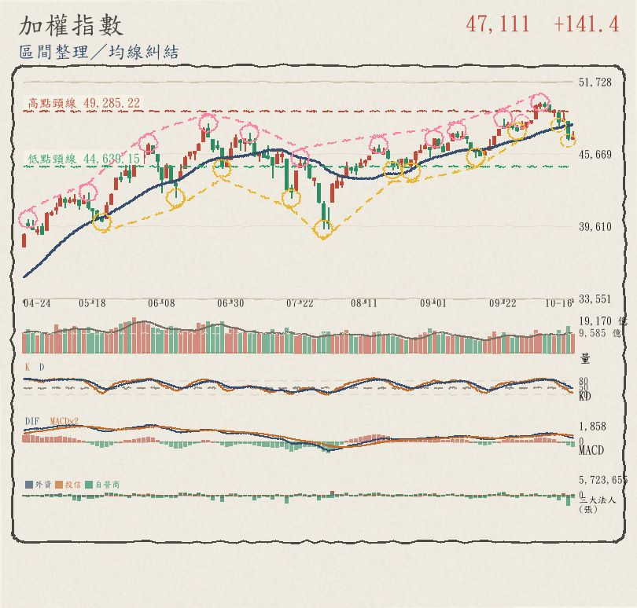
圖說：加權指數日 K（與個股圖相同標記）：黃圈＝轉折低點、粉圈＝轉折高點、虛線小圈＝還沒確認的轉折、藍線＝月線 MA20、水平虛線＝高點／低點頸線。最後一根是資料日當天。
本區塊為公開資料的技術面觀察，不構成投資建議，
不報牌、不預測、不下買賣決策。成交金額為集中市場總成交金額（含 ETF／權證），
與頁首摘要的「上市個股成交金額」口徑不同。標籤是統計，不是評分、也不是推薦。
上市 vs 上櫃（同期快篩）
加權 +0.30% vs 櫃買 +0.85%（同向） → 同向
（兩個市場分開寫，不合併成一個數字；櫃買為 TPEX 公開資料）
櫃買歷史：TPEX 逐日回補 130 根；來源：櫃買中心 www/zh-tw/indexInfo/sectinx（逐日，官方；OpenAPI tpex_index 只回當月）
（TPEX OpenAPI 只回當月，故逐日回補；歷史不足就不算該條均線並標「資料不足」，不用錯數字）
近 20 個交易日大盤狀態回溯（最新在上）（點開看逐日主狀態／量比／量價象限）
用同一支程式回算最近 20 個交易日（主狀態 S1~S8 與量比 20 皆為當日收盤當時的判定，
不是事後調整）；量比 20 未公布的日子寫「—」。
好條件最多的（前 10）
不好條件最多的（前 10）
好條件（8 項）：站上月線、月線向上、底底高、頭頭高、突破頸線、相對大盤強、攻擊量（量增＋上漲）、守住今日高檔（距今日高點 1% 內）。
不好條件（8 項）：跌破前低、今日下跌、相對大盤弱、在月線之下、量增下跌（出貨）、貼近今日低點（1% 內）、跌破昨日低點、月線下彎。
兩邊都是同一組日線資料＋盤中即時價算出來的「符合項目數」，只是把方向相反的條件分開數；
條件數不是評分或推薦，不構成投資建議。
逆勢上漲（加權下跌、個股上漲）（23 上市 15／上櫃 8）
盤中爆量（估量比 ≥ 1.5）（17 上市 11／上櫃 6）
跌破前低（線型轉弱）（28 上市 22／上櫃 6）
今日疲弱（跌幅前 10）（10 上市 9／上櫃 1）
逐檔（70 檔，依盤中成交金額排序）
台積電 2330 上市
2405 -15.0（-0.62%）
區間或轉弱 盤中成交值 387.28 億・全榜第 1 名（上市第 1 名）・相對大盤 +0.39
好條件 2/8：月線向上、相對大盤強
不好條件 4/8：今日下跌、在月線之下、貼近今日低點（1% 內）、跌破昨日低點
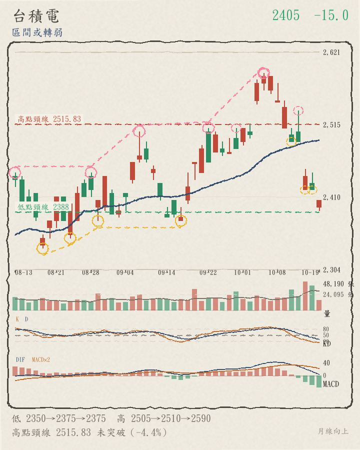
12:31 盤中 2405（-0.62%），比加權指數強 0.39 個百分點、跌破月線 2491，離高點頸線 2515.83 還差 4.4%，轉折還沒走出明顯方向。
- 月線位置：現價 2405 在月線 2491 之下（-3.5%）；5 日線 2476 也在月線之下（短均在下）；月線向上
- 量能：以已過交易時間推估，今天成交量約是 20 日均量的 0.93 倍（量平），比 20 日均量少一些
- 關鍵價位：高點頸線 2515.83 還沒突破，差 4.4%；前一交易日高點 2445（低於 1.6%）；今天盤中高點 2405（高於 0.0%）；今天盤中低點 2390（高於 0.6%）
- 轉折結構：低點 2350、2375、2375 與高點 2505、2510、2590 都沒有明顯遞增，屬於區間震盪或轉弱；還沒確認的轉折低點 10-15 2420、10-16 2420；還沒確認的轉折高點 10-06 2590、10-14 2535（圖上虛線小圈）
富喬 1815 上櫃
154 +14.0（+10.00%）
上升趨勢（底底高＋頭頭高） 盤中成交值 300.42 億・全榜第 2 名（上櫃第 1 名）・相對大盤 +11.01
好條件 7/8：站上月線、月線向上、底底高、頭頭高、突破頸線、相對大盤強、攻擊量（量增＋上漲）
不好條件 0/8：無
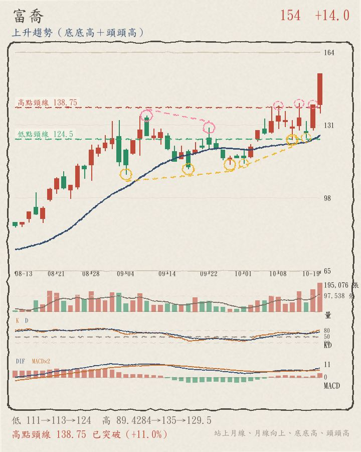
12:31 盤中 154（+10.00%），比加權指數強 11.01 個百分點、站上月線 124.275，已突破高點頸線 138.75，轉折結構仍是底底高＋頭頭高。
- 月線位置：現價 154 在月線 124.275 之上（+23.9%）；5 日線 132.9 也在月線之上（短均在上）；月線向上
- 量能：以已過交易時間推估，今天成交量約是 20 日均量的 4.19 倍（爆量），比 20 日均量大不少；上漲又量增，量價配合
- 關鍵價位：高點頸線 138.75 已站上；前一交易日高點 140（高於 10.0%）；今天盤中高點 154（高於 0.0%）；今天盤中低點 136（高於 13.2%）
- 轉折結構：低點 111、113、124 一路墊高、高點 89.4284、135、129.5 也一路墊高，是底底高＋頭頭高；還沒確認的轉折低點 10-13 124、10-15 125；還沒確認的轉折高點 10-14 140.5、10-16 140（圖上虛線小圈）
南亞 1303 上市
302 -5.0（-1.63%）
高點墊高、底部不穩 盤中成交值 240.13 億・全榜第 3 名（上市第 2 名）・相對大盤 -0.62
好條件 4/8：站上月線、月線向上、頭頭高、突破頸線
不好條件 4/8：今日下跌、相對大盤弱、量增下跌（出貨）、跌破昨日低點
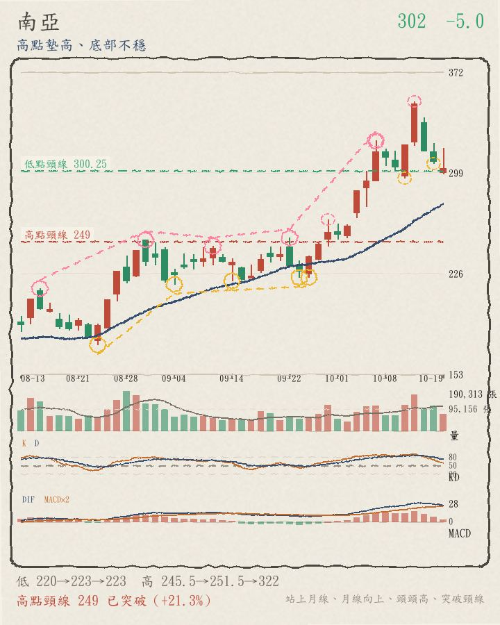
12:31 盤中 302（-1.63%），比加權指數弱 0.62 個百分點、站上月線 272.325，已突破高點頸線 249，高點還在墊高（但底部沒同步墊高）。
- 月線位置：現價 302 在月線 272.325 之上（+10.9%）；5 日線 318.5 也在月線之上（短均在上）；月線向上
- 量能：以已過交易時間推估，今天成交量約是 20 日均量的 1.22 倍（量增），比 20 日均量大不少；下跌卻量增，量價背離
- 關鍵價位：高點頸線 249 已站上；前一交易日高點 320（低於 5.6%）；今天盤中高點 316.5（低於 4.6%）；今天盤中低點 298（高於 1.3%）
- 轉折結構：高點 245.5、251.5、322 墊高（頭頭高），但低點 220.5、223、223 沒有同步墊高；還沒確認的轉折低點 10-13 295、10-16 305.5；還沒確認的轉折高點 10-07 322、10-14 350.5（圖上虛線小圈）
台虹 8039 上市
306.5 -5.0（-1.61%）
區間或轉弱 盤中成交值 207 億・全榜第 4 名（上市第 3 名）・相對大盤 -0.60
好條件 2/8：站上月線、月線向上
不好條件 3/8：今日下跌、相對大盤弱、量增下跌（出貨）
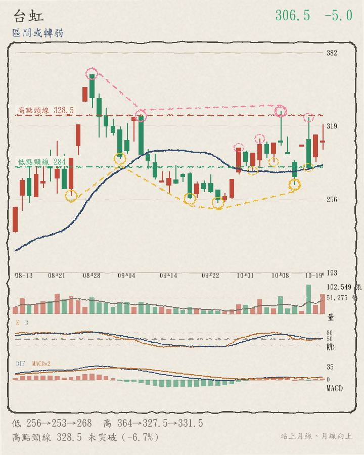
12:31 盤中 306.5（-1.61%），比加權指數弱 0.60 個百分點、站上月線 284.05，離高點頸線 328.5 還差 6.7%，轉折還沒走出明顯方向。
- 月線位置：現價 306.5 在月線 284.05 之上（+7.9%）；5 日線 293.9 也在月線之上（短均在上）；月線向上
- 量能：以已過交易時間推估，今天成交量約是 20 日均量的 3.47 倍（爆量），比 20 日均量大不少；下跌卻量增，量價背離
- 關鍵價位：高點頸線 328.5 還沒突破，差 6.7%；前一交易日高點 311.5（低於 1.6%）；今天盤中高點 320.5（低於 4.4%）；今天盤中低點 299（高於 2.5%）
- 轉折結構：低點 256.5、253、268.5 與高點 364、327.5、331.5 都沒有明顯遞增，屬於區間震盪或轉弱；還沒確認的轉折低點 10-13 268.5、10-15 283.5；還沒確認的轉折高點 10-08 331.5、10-15 326.5（圖上虛線小圈）
國巨* 2327 上市
533 -34.0（-6.00%）
區間或轉弱 盤中成交值 204.57 億・全榜第 5 名（上市第 4 名）・相對大盤 -4.99
好條件 1/8：月線向上
不好條件 5/8：跌破前低、今日下跌、相對大盤弱、在月線之下、跌破昨日低點
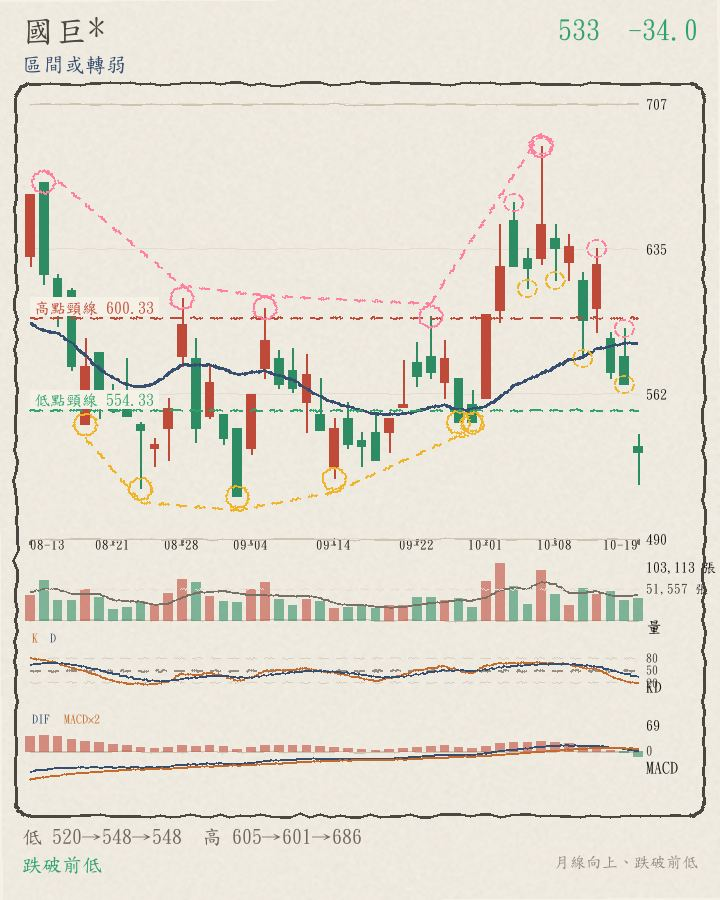
12:31 盤中 533（-6.00%），比加權指數弱 4.99 個百分點、跌破月線 587.75，離高點頸線 600.33 還差 11.2%，轉折還沒走出明顯方向。
- 月線位置：現價 533 在月線 587.75 之下（-9.3%）；5 日線 600.4 也在月線之上（短均在上）；月線向上
- 量能：以已過交易時間推估，今天成交量約是 20 日均量的 1.12 倍（量增），比 20 日均量大一些；下跌卻量增，量價背離
- 關鍵價位：已跌破前一個轉折低點；高點頸線 600.33 還在現價上方 11.2%；前一交易日高點 595（低於 10.4%）；今天盤中高點 542（低於 1.7%）；今天盤中低點 517（高於 3.1%）
- 轉折結構：低點 520、548、548 與高點 605、601、686 都沒有明顯遞增，屬於區間震盪或轉弱；還沒確認的轉折低點 10-13 580、10-16 567；還沒確認的轉折高點 10-14 635、10-16 595（圖上虛線小圈）
聯發科 2454 上市
4230 -20.0（-0.47%）
底部墊高、未過前高 盤中成交值 162.22 億・全榜第 6 名（上市第 5 名）・相對大盤 +0.54
好條件 3/8：底底高、相對大盤強、守住今日高檔（距今日高點 1% 內）
不好條件 5/8：跌破前低、今日下跌、在月線之下、跌破昨日低點、月線下彎
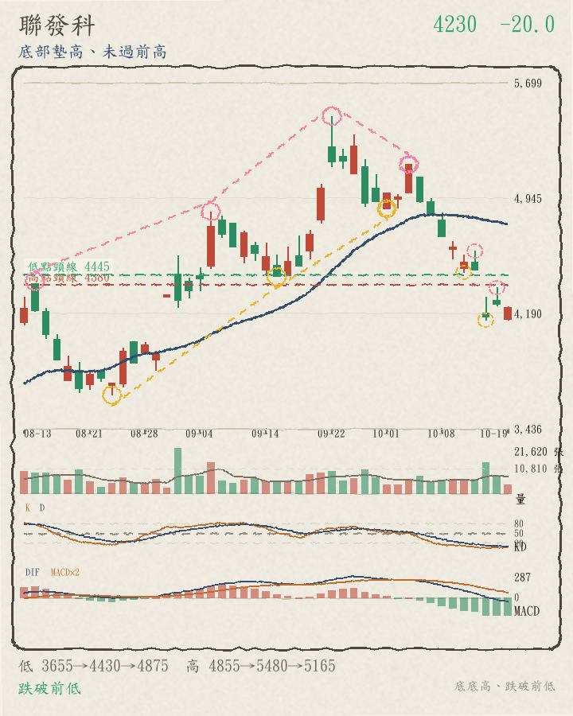
12:31 盤中 4230（-0.47%），比加權指數強 0.54 個百分點、跌破月線 4790.5，離高點頸線 4380 還差 3.4%，底部還在墊高（但高點沒同步創高）。
- 月線位置：現價 4230 在月線 4790.5 之下（-11.7%）；5 日線 4408 也在月線之下（短均在下）；月線向下
- 量能：以已過交易時間推估，今天成交量約是 20 日均量的 0.66 倍（量縮），比 20 日均量少很多
- 關鍵價位：已跌破前一個轉折低點；高點頸線 4380 還在現價上方 3.4%；前一交易日高點 4360（低於 3.0%）；今天盤中高點 4235（低於 0.1%）；今天盤中低點 4145（高於 2.1%）
- 轉折結構：低點 3655、4430、4875 墊高（底底高），但高點 4855、5480、5165 沒有同步創高；還沒確認的轉折低點 10-13 4460、10-15 4145；還沒確認的轉折高點 10-14 4600、10-16 4360（圖上虛線小圈）
台燿 6274 上櫃
1615 +0.0（+0.00%）
高點墊高、底部不穩 盤中成交值 136.47 億・全榜第 7 名（上櫃第 2 名）・相對大盤 +1.01
好條件 4/8：站上月線、月線向上、頭頭高、相對大盤強
不好條件 0/8：無
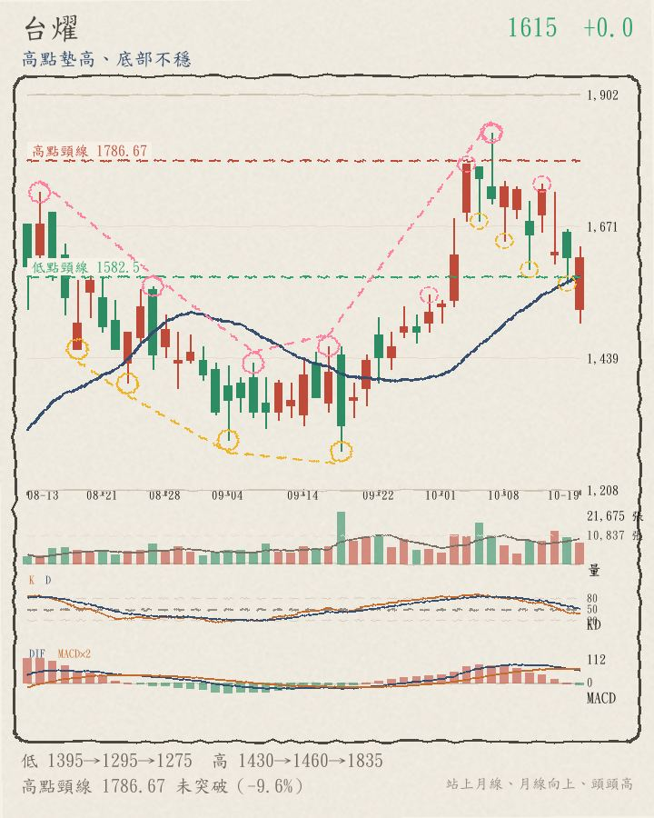
12:31 盤中 1615（+0.00%），比加權指數強 1.01 個百分點、站上月線 1572.75，離高點頸線 1786.67 還差 9.6%，高點還在墊高（但底部沒同步墊高）。
- 月線位置：現價 1615 在月線 1572.75 之上（+2.7%）；5 日線 1673 也在月線之上（短均在上）；月線向上
- 量能：以已過交易時間推估，今天成交量約是 20 日均量的 1.11 倍（量增），比 20 日均量大一些
- 關鍵價位：高點頸線 1786.67 還沒突破，差 9.6%；前一交易日高點 1665（低於 3.0%）；今天盤中高點 1635（低於 1.2%）；今天盤中低點 1500（高於 7.7%）
- 轉折結構：高點 1430、1460、1835 墊高（頭頭高），但低點 1395、1295、1275 沒有同步墊高；還沒確認的轉折低點 10-13 1595、10-16 1570；還沒確認的轉折高點 10-07 1835、10-14 1745（圖上虛線小圈）
南亞科 2408 上市
432 -15.5（-3.46%）
區間或轉弱 盤中成交值 133.63 億・全榜第 8 名（上市第 6 名）・相對大盤 -2.45
好條件 1/8：守住今日高檔（距今日高點 1% 內）
不好條件 6/8：跌破前低、今日下跌、相對大盤弱、在月線之下、跌破昨日低點、月線下彎
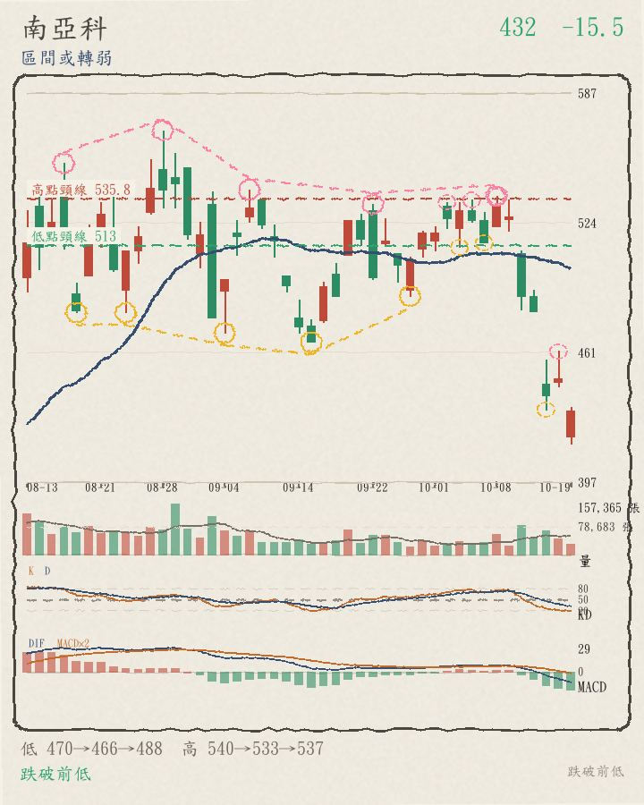
12:31 盤中 432（-3.46%），比加權指數弱 2.45 個百分點、跌破月線 504.5，離高點頸線 535.8 還差 19.4%，轉折還沒走出明顯方向。
- 月線位置：現價 432 在月線 504.5 之下（-14.4%）；5 日線 476.5 也在月線之下（短均在下）；月線向下
- 量能：以已過交易時間推估，今天成交量約是 20 日均量的 0.86 倍（量平），比 20 日均量少一些
- 關鍵價位：已跌破前一個轉折低點；高點頸線 535.8 還在現價上方 19.4%；前一交易日高點 461（低於 6.3%）；今天盤中高點 433.5（低於 0.3%）；今天盤中低點 415.5（高於 4.0%）
- 轉折結構：低點 470、465.5、488 與高點 540、533、537 都沒有明顯遞增，屬於區間震盪或轉弱；還沒確認的轉折低點 10-07 514、10-15 432.5；還沒確認的轉折高點 10-08 537、10-16 461（圖上虛線小圈）
台郡 6269 上市
83.5 +1.5（+1.83%）
高點墊高、底部不穩 盤中成交值 131.53 億・全榜第 9 名（上市第 7 名）・相對大盤 +2.84
好條件 6/8：站上月線、月線向上、頭頭高、突破頸線、相對大盤強、攻擊量（量增＋上漲）
不好條件 0/8：無
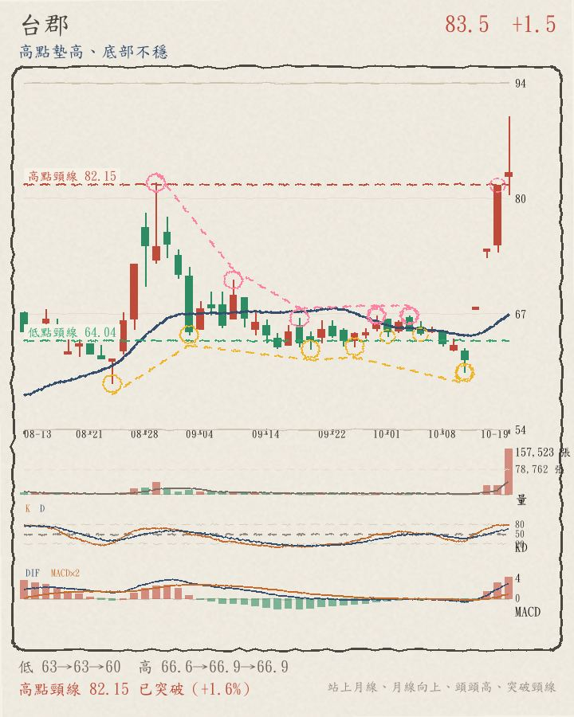
12:31 盤中 83.5（+1.83%），比加權指數強 2.84 個百分點、站上月線 66.105，已突破高點頸線 82.15，高點還在墊高（但底部沒同步墊高）。
- 月線位置：現價 83.5 在月線 66.105 之上（+26.3%）；5 日線 69.96 也在月線之上（短均在上）；月線向上
- 量能：以已過交易時間推估，今天成交量約是 20 日均量的 50.15 倍（爆量），比 20 日均量大不少；上漲又量增，量價配合
- 關鍵價位：高點頸線 82.15 已站上；前一交易日高點 82（高於 1.8%）；今天盤中高點 90（低於 7.2%）；今天盤中低點 80.9（高於 3.2%）
- 轉折結構：高點 66.6、66.9、66.9 墊高（頭頭高），但低點 63、63.3、60.3 沒有同步墊高；還沒確認的轉折低點 10-06 64.7、10-13 60.3；還沒確認的轉折高點 10-05 66.9、10-16 82（圖上虛線小圈）
聯電 2303 上市
130 -3.0（-2.26%）
底部墊高、未過前高 盤中成交值 128.03 億・全榜第 10 名（上市第 8 名）・相對大盤 -1.25
好條件 2/8：底底高、守住今日高檔（距今日高點 1% 內）
不好條件 6/8：跌破前低、今日下跌、相對大盤弱、在月線之下、跌破昨日低點、月線下彎
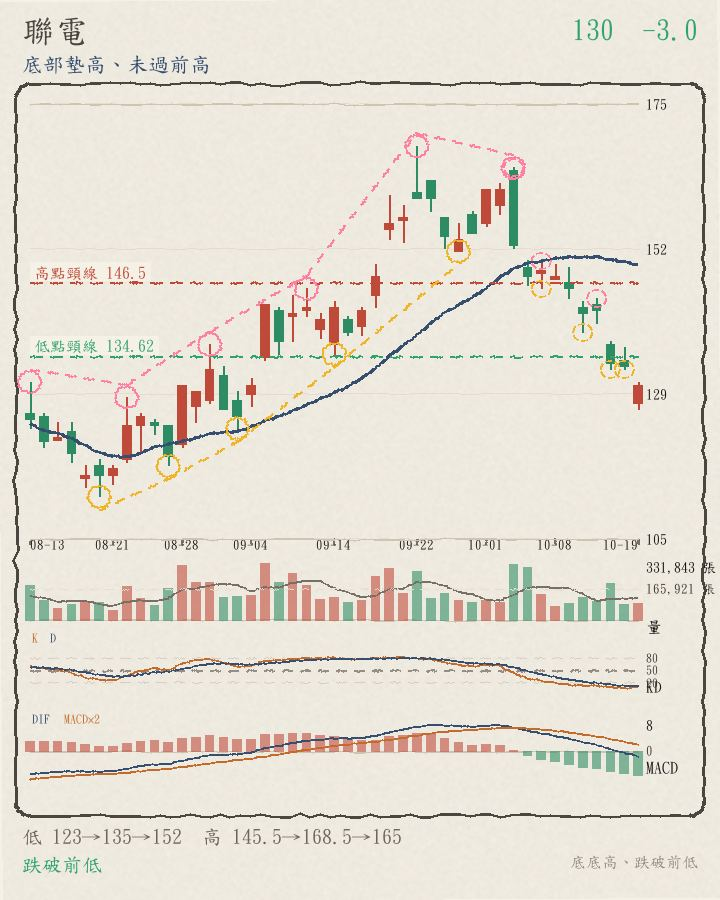
12:31 盤中 130（-2.26%），比加權指數弱 1.25 個百分點、跌破月線 149.95，離高點頸線 146.5 還差 11.3%，底部還在墊高（但高點沒同步創高）。
- 月線位置：現價 130 在月線 149.95 之下（-13.3%）；5 日線 139.1 也在月線之下（短均在下）；月線向下
- 量能：以已過交易時間推估，今天成交量約是 20 日均量的 0.76 倍（量平），比 20 日均量少很多
- 關鍵價位：已跌破前一個轉折低點；高點頸線 146.5 還在現價上方 11.3%；前一交易日高點 136（低於 4.4%）；今天盤中高點 130.5（低於 0.4%）；今天盤中低點 126（高於 3.2%）
- 轉折結構：低點 123、135、151.5 墊高（底底高），但高點 145.5、168.5、165 沒有同步創高；還沒確認的轉折低點 10-15 132.5、10-16 132.5；還沒確認的轉折高點 10-07 150、10-14 144（圖上虛線小圈）
創意 3443 上市
7850 +370.0（+4.95%）
上升趨勢（底底高＋頭頭高） 盤中成交值 124.58 億・全榜第 11 名（上市第 9 名）・相對大盤 +5.96
好條件 5/8：月線向上、底底高、頭頭高、相對大盤強、攻擊量（量增＋上漲）
不好條件 1/8：在月線之下
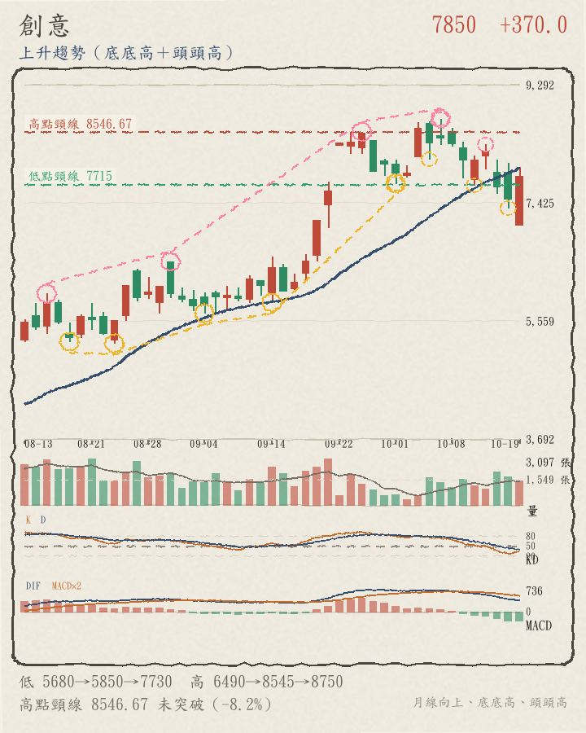
12:31 盤中 7850（+4.95%），比加權指數強 5.96 個百分點、跌破月線 7893.5，離高點頸線 8546.67 還差 8.2%，轉折結構仍是底底高＋頭頭高。
- 月線位置：現價 7850 在月線 7893.5 之下（-0.6%）；5 日線 7918 也在月線之上（短均在上）；月線向上
- 量能：以已過交易時間推估，今天成交量約是 20 日均量的 1.39 倍（量增），比 20 日均量大不少；上漲又量增，量價配合
- 關鍵價位：高點頸線 8546.67 還沒突破，差 8.2%；前一交易日高點 8050（低於 2.5%）；今天盤中高點 7980（低於 1.6%）；今天盤中低點 7065（高於 11.1%）
- 轉折結構：低點 5680、5850、7730 一路墊高、高點 6490、8545、8750 也一路墊高，是底底高＋頭頭高；還沒確認的轉折低點 10-13 7700、10-16 7345；還沒確認的轉折高點 10-07 8750、10-14 8345（圖上虛線小圈）
台玻 1802 上市
67.5 +0.6（+0.90%）
高點墊高、底部不穩 盤中成交值 123.2 億・全榜第 12 名（上市第 10 名）・相對大盤 +1.91
好條件 5/8：站上月線、月線向上、頭頭高、相對大盤強、攻擊量（量增＋上漲）
不好條件 0/8：無
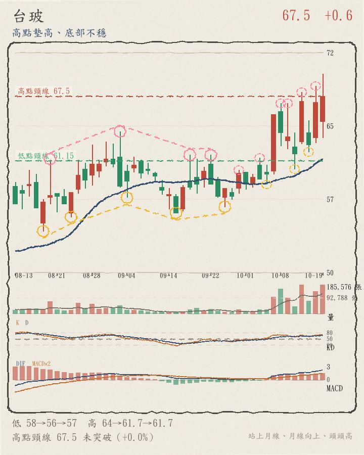
12:31 盤中 67.5（+0.90%），比加權指數強 1.91 個百分點、站上月線 60.855，離高點頸線 67.5 還差 0.0%，高點還在墊高（但底部沒同步墊高）。
- 月線位置：現價 67.5 在月線 60.855 之上（+10.9%）；5 日線 64.38 也在月線之上（短均在上）；月線向上
- 量能：以已過交易時間推估，今天成交量約是 20 日均量的 5.02 倍（爆量），比 20 日均量大不少；上漲又量增，量價配合
- 關鍵價位：高點頸線 67.5 還沒突破，差 0.0%；前一交易日高點 68.5（低於 1.5%）；今天盤中高點 69.7（低於 3.2%）；今天盤中低點 63.4（高於 6.5%）
- 轉折結構：高點 64、61.7、61.7 墊高（頭頭高），但低點 57.5、56、56.6 沒有同步墊高；還沒確認的轉折低點 10-13 60.3、10-15 62；還沒確認的轉折高點 10-14 67.9、10-16 68.5（圖上虛線小圈）
金像電 2368 上市
1255 +10.0（+0.80%）
區間或轉弱 盤中成交值 119.17 億・全榜第 13 名（上市第 11 名）・相對大盤 +1.81
好條件 5/8：站上月線、月線向上、相對大盤強、攻擊量（量增＋上漲）、守住今日高檔（距今日高點 1% 內）
不好條件 0/8：無
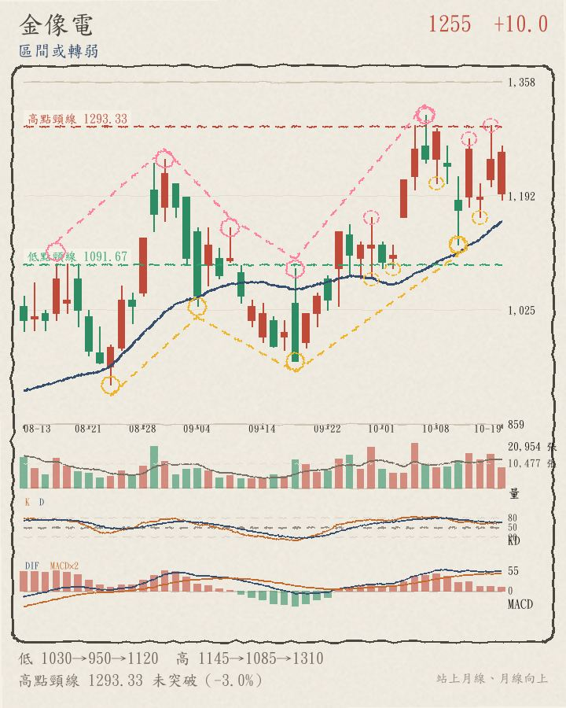
12:31 盤中 1255（+0.80%），比加權指數強 1.81 個百分點、站上月線 1141.85，離高點頸線 1293.33 還差 3.0%，轉折還沒走出明顯方向。
- 月線位置：現價 1255 在月線 1141.85 之上（+9.9%）；5 日線 1220 也在月線之上（短均在上）；月線向上
- 量能：以已過交易時間推估，今天成交量約是 20 日均量的 1.10 倍（量增），比 20 日均量大一些；上漲又量增，量價配合
- 關鍵價位：高點頸線 1293.33 還沒突破，差 3.0%；前一交易日高點 1295（低於 3.1%）；今天盤中高點 1265（低於 0.8%）；今天盤中低點 1185（高於 5.9%）
- 轉折結構：低點 1030、950、1120 與高點 1145、1085、1310 都沒有明顯遞增，屬於區間震盪或轉弱；還沒確認的轉折低點 10-13 1120、10-15 1160；還沒確認的轉折高點 10-14 1275、10-16 1295（圖上虛線小圈）
大立光 3008 上市
6215 -185.0（-2.89%）
區間或轉弱 盤中成交值 109.63 億・全榜第 14 名（上市第 12 名）・相對大盤 -1.88
好條件 1/8：月線向上
不好條件 4/8：跌破前低、今日下跌、相對大盤弱、在月線之下
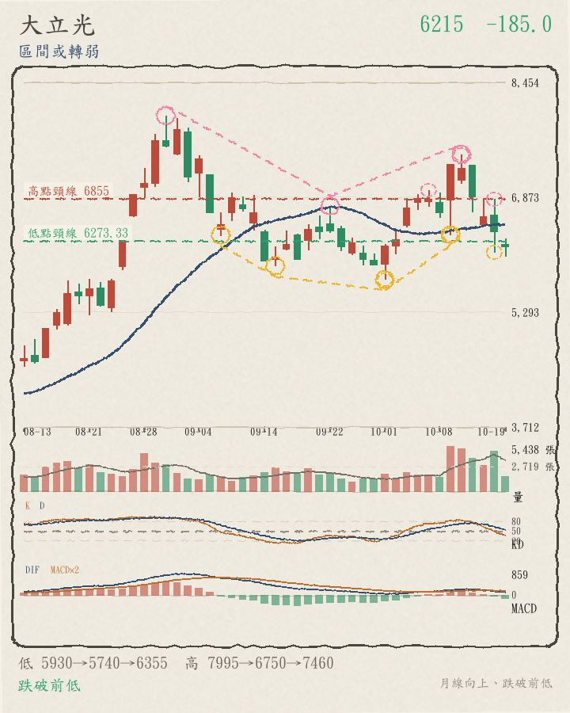
12:31 盤中 6215（-2.89%），比加權指數弱 1.88 個百分點、跌破月線 6497.5，離高點頸線 6855 還差 9.3%，轉折還沒走出明顯方向。
- 月線位置：現價 6215 在月線 6497.5 之下（-4.3%）；5 日線 6897 也在月線之上（短均在上）；月線向上
- 量能：以已過交易時間推估，今天成交量約是 20 日均量的 0.93 倍（量平），比 20 日均量少一些
- 關鍵價位：已跌破前一個轉折低點；高點頸線 6855 還在現價上方 9.3%；前一交易日高點 6845（低於 9.2%）；今天盤中高點 6305（低於 1.4%）；今天盤中低點 6065（高於 2.5%）
- 轉折結構：低點 5930、5740、6355 與高點 7995、6750、7460 都沒有明顯遞增，屬於區間震盪或轉弱；還沒確認的轉折低點 10-12 6355、10-16 6115；還沒確認的轉折高點 10-13 7460、10-16 6845（圖上虛線小圈）
穩懋 3105 上櫃
481 -20.0（-3.99%）
區間或轉弱 盤中成交值 99.89 億・全榜第 15 名（上櫃第 3 名）・相對大盤 -2.98
好條件 1/8：月線向上
不好條件 5/8：跌破前低、今日下跌、相對大盤弱、在月線之下、跌破昨日低點
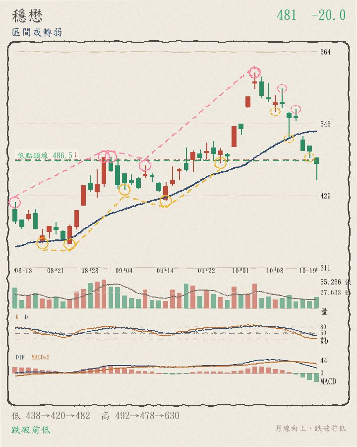
12:31 盤中 481（-3.99%），比加權指數弱 2.98 個百分點、跌破月線 533.5，離高點頸線 487.33 還差 1.3%，轉折還沒走出明顯方向。
- 月線位置：現價 481 在月線 533.5 之下（-9.8%）；5 日線 539.2 也在月線之上（短均在上）；月線向上
- 量能：以已過交易時間推估，今天成交量約是 20 日均量的 0.97 倍（量平），跟 20 日均量差不多
- 關鍵價位：已跌破前一個轉折低點；高點頸線 487.33 還在現價上方 1.3%；前一交易日高點 510（低於 5.7%）；今天盤中高點 491（低於 2.0%）；今天盤中低點 454（高於 5.9%）
- 轉折結構：低點 438.5、420、482 與高點 492、478、630 都沒有明顯遞增，屬於區間震盪或轉弱；還沒確認的轉折低點 10-13 522、10-16 491；還沒確認的轉折高點 10-12 604、10-14 570（圖上虛線小圈）
健策 3653 上市
6530 -200.0（-2.97%）
高點墊高、底部不穩 盤中成交值 98.21 億・全榜第 16 名（上市第 13 名）・相對大盤 -1.96
好條件 3/8：月線向上、頭頭高、守住今日高檔（距今日高點 1% 內）
不好條件 6/8：跌破前低、今日下跌、相對大盤弱、在月線之下、量增下跌（出貨）、跌破昨日低點
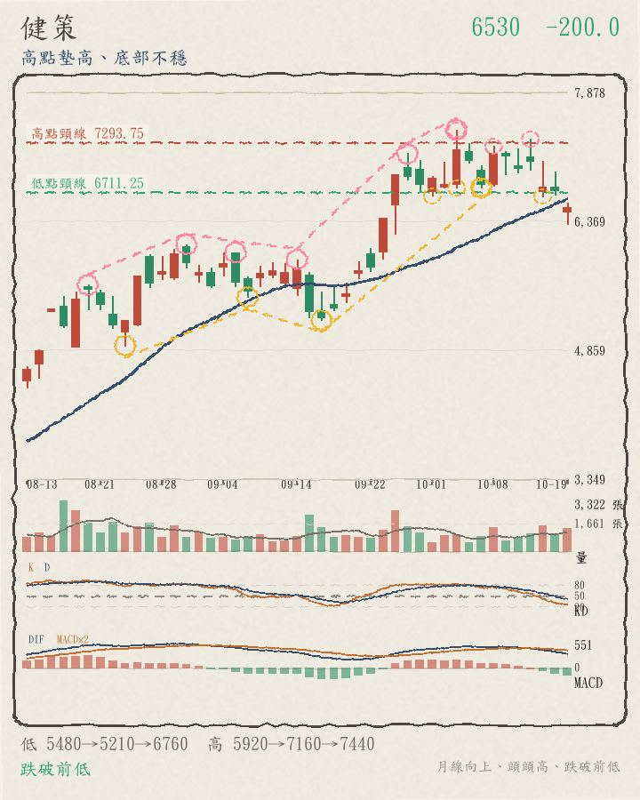
12:31 盤中 6530（-2.97%），比加權指數弱 1.96 個百分點、跌破月線 6570.5，離高點頸線 7293.75 還差 10.5%，高點還在墊高（但底部沒同步墊高）。
- 月線位置：現價 6530 在月線 6570.5 之下（-0.6%）；5 日線 6943 也在月線之上（短均在上）；月線向上
- 量能：以已過交易時間推估，今天成交量約是 20 日均量的 1.57 倍（爆量），比 20 日均量大不少；下跌卻量增，量價背離
- 關鍵價位：已跌破前一個轉折低點；高點頸線 7293.75 還在現價上方 10.5%；前一交易日高點 6950（低於 6.0%）；今天盤中高點 6585（低於 0.8%）；今天盤中低點 6330（高於 3.2%）
- 轉折結構：高點 5920、7160、7440 墊高（頭頭高），但低點 5480、5210、6760 沒有同步墊高；還沒確認的轉折低點 10-07 6760、10-15 6660；還沒確認的轉折高點 10-08 7245、10-14 7330（圖上虛線小圈）
欣興 3037 上市
1100 +10.0（+0.92%）
高點墊高、底部不穩 盤中成交值 91.23 億・全榜第 17 名（上市第 14 名）・相對大盤 +1.93
好條件 5/8：月線向上、頭頭高、突破頸線、相對大盤強、守住今日高檔（距今日高點 1% 內）
不好條件 1/8：在月線之下
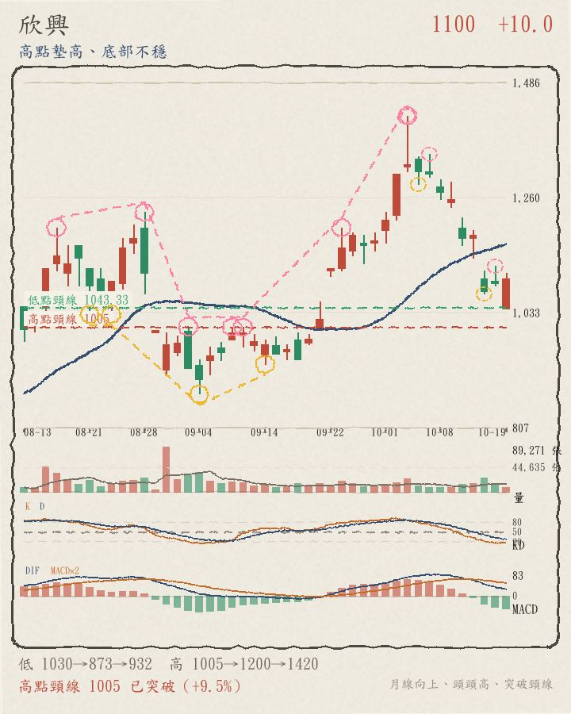
12:31 盤中 1100（+0.92%），比加權指數強 1.93 個百分點、跌破月線 1161.1，已突破高點頸線 1005，高點還在墊高（但底部沒同步墊高）。
- 月線位置：現價 1100 在月線 1161.1 之下（-5.3%）；5 日線 1157 也在月線之下（短均在下）；月線向上
- 量能：以已過交易時間推估，今天成交量約是 20 日均量的 0.73 倍（量平），比 20 日均量少很多；上漲但量縮，量價背離
- 關鍵價位：高點頸線 1005 已站上；前一交易日高點 1125（低於 2.2%）；今天盤中高點 1110（低於 0.9%）；今天盤中低點 1040（高於 5.8%）
- 轉折結構：高點 1005、1200、1420 墊高（頭頭高），但低點 1030、873、932 沒有同步墊高；還沒確認的轉折低點 10-06 1285、10-15 1070；還沒確認的轉折高點 10-07 1345、10-16 1125（圖上虛線小圈）
金居 8358 上櫃
492 +20.0（+4.24%）
底部墊高、未過前高 盤中成交值 90.63 億・全榜第 18 名（上櫃第 4 名）・相對大盤 +5.25
好條件 3/8：底底高、相對大盤強、攻擊量（量增＋上漲）
不好條件 2/8：在月線之下、月線下彎
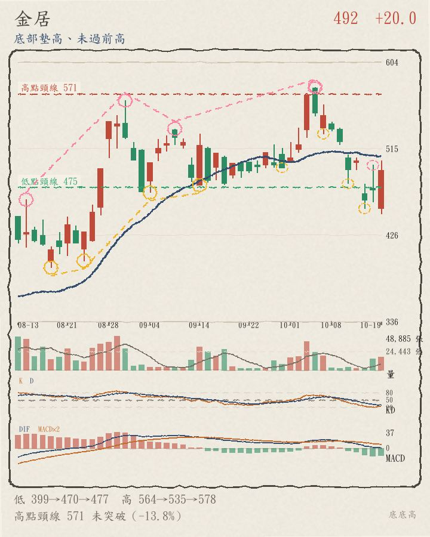
12:31 盤中 492（+4.24%），比加權指數強 5.25 個百分點、跌破月線 507.575，離高點頸線 571 還差 13.8%，底部還在墊高（但高點沒同步創高）。
- 月線位置：現價 492 在月線 507.575 之下（-3.1%）；5 日線 490.1 也在月線之下（短均在下）；月線向下
- 量能：以已過交易時間推估，今天成交量約是 20 日均量的 1.90 倍（爆量），比 20 日均量大不少；上漲又量增，量價配合
- 關鍵價位：高點頸線 571 還沒突破，差 13.8%；前一交易日高點 497.5（低於 1.1%）；今天盤中高點 502（低於 2.0%）；今天盤中低點 447.5（高於 9.9%）
- 轉折結構：低點 399、469.5、477 墊高（底底高），但高點 564、535、578 沒有同步創高；還沒確認的轉折低點 10-13 478.5、10-15 453；還沒確認的轉折高點 10-06 578、10-16 497.5（圖上虛線小圈）
景碩 3189 上市
981 -19.0（-1.90%）
區間或轉弱 盤中成交值 88.72 億・全榜第 19 名（上市第 15 名）・相對大盤 -0.89
好條件 3/8：站上月線、月線向上、守住今日高檔（距今日高點 1% 內）
不好條件 3/8：今日下跌、相對大盤弱、跌破昨日低點
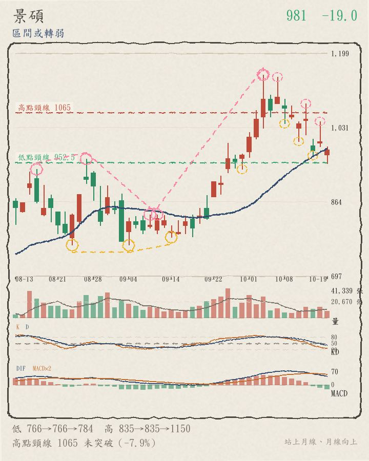
12:31 盤中 981（-1.90%），比加權指數弱 0.89 個百分點、站上月線 975.75，離高點頸線 1065 還差 7.9%，轉折還沒走出明顯方向。
- 月線位置：現價 981 在月線 975.75 之上（+0.5%）；5 日線 1025.8 也在月線之上（短均在上）；月線向上
- 量能：以已過交易時間推估，今天成交量約是 20 日均量的 0.65 倍（量縮），比 20 日均量少很多
- 關鍵價位：高點頸線 1065 還沒突破，差 7.9%；前一交易日高點 1045（低於 6.1%）；今天盤中高點 988（低於 0.7%）；今天盤中低點 950（高於 3.3%）
- 轉折結構：低點 766、766、784 與高點 835、835、1150 都沒有明顯遞增，屬於區間震盪或轉弱；還沒確認的轉折低點 10-13 1000、10-15 968；還沒確認的轉折高點 10-14 1085、10-16 1045（圖上虛線小圈）
環球晶 6488 上櫃
878 -24.0（-2.66%）
區間或轉弱 盤中成交值 86.88 億・全榜第 20 名（上櫃第 5 名）・相對大盤 -1.65
好條件 2/8：月線向上、守住今日高檔（距今日高點 1% 內）
不好條件 4/8：今日下跌、相對大盤弱、在月線之下、跌破昨日低點
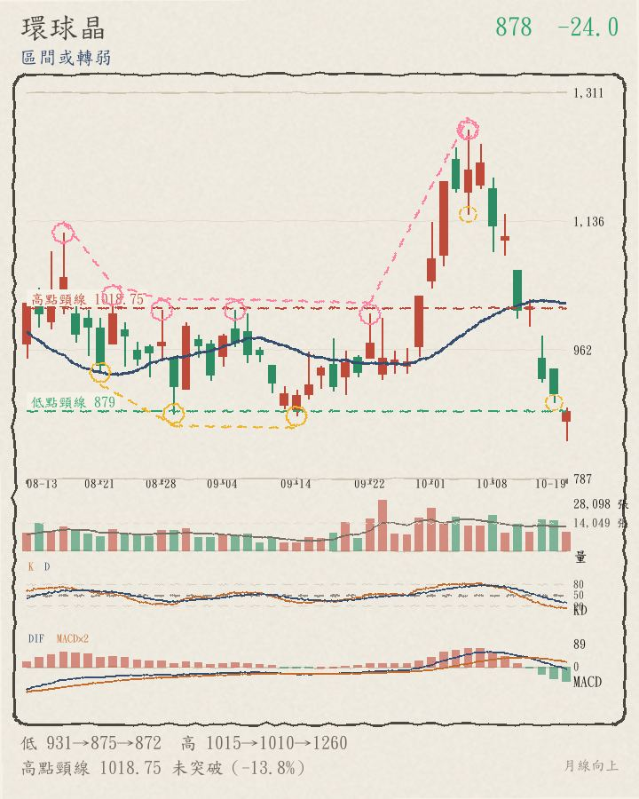
12:31 盤中 878（-2.66%），比加權指數弱 1.65 個百分點、跌破月線 1027.65，離高點頸線 1018.75 還差 13.8%，轉折還沒走出明顯方向。
- 月線位置：現價 878 在月線 1027.65 之下（-14.6%）；5 日線 995 也在月線之下（短均在下）；月線向上
- 量能：以已過交易時間推估，今天成交量約是 20 日均量的 0.90 倍（量平），比 20 日均量少一些
- 關鍵價位：高點頸線 1018.75 還沒突破，差 13.8%；前一交易日高點 936（低於 6.2%）；今天盤中高點 883（低於 0.6%）；今天盤中低點 838（高於 4.8%）
- 轉折結構：低點 931、875、872 與高點 1015、1010、1260 都沒有明顯遞增，屬於區間震盪或轉弱；還沒確認的轉折低點 10-06 1145、10-16 890；還沒確認的轉折高點 10-06 1260（圖上虛線小圈）
台達電 2308 上市
1645 +10.0（+0.61%）
高點墊高、底部不穩 盤中成交值 86.56 億・全榜第 21 名（上市第 16 名）・相對大盤 +1.62
好條件 4/8：月線向上、頭頭高、相對大盤強、守住今日高檔（距今日高點 1% 內）
不好條件 2/8：跌破前低、在月線之下
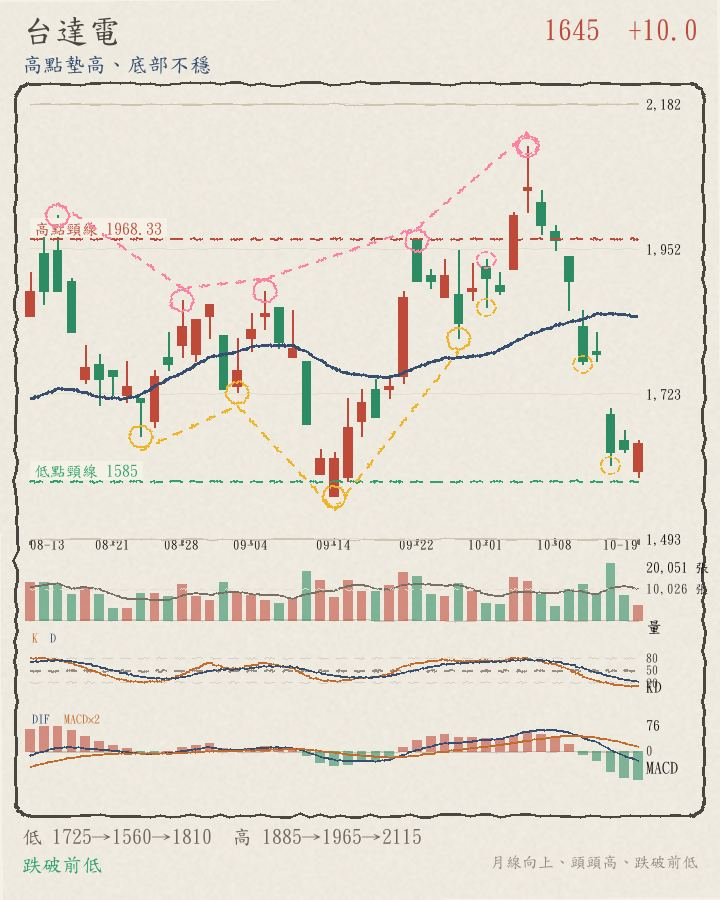
12:31 盤中 1645（+0.61%），比加權指數強 1.62 個百分點、跌破月線 1848.25，離高點頸線 1968.33 還差 16.4%，高點還在墊高（但底部沒同步墊高）。
- 月線位置：現價 1645 在月線 1848.25 之下（-11.0%）；5 日線 1745 也在月線之下（短均在下）；月線向上
- 量能：以已過交易時間推估，今天成交量約是 20 日均量的 0.60 倍（量縮），比 20 日均量少很多；上漲但量縮，量價背離
- 關鍵價位：已跌破前一個轉折低點；高點頸線 1968.33 還在現價上方 16.4%；前一交易日高點 1665（低於 1.2%）；今天盤中高點 1650（低於 0.3%）；今天盤中低點 1590（高於 3.5%）
- 轉折結構：高點 1885、1965、2115 墊高（頭頭高），但低點 1725、1560、1810 沒有同步墊高；還沒確認的轉折低點 10-13 1770、10-15 1610；還沒確認的轉折高點 10-01 1935、10-06 2115（圖上虛線小圈）
緯穎 6669 上市
1875 +30.0（+1.63%）
區間或轉弱 盤中成交值 86.12 億・全榜第 22 名（上市第 17 名）・相對大盤 +2.64
好條件 2/8：相對大盤強、攻擊量（量增＋上漲）
不好條件 3/8：跌破前低、在月線之下、月線下彎
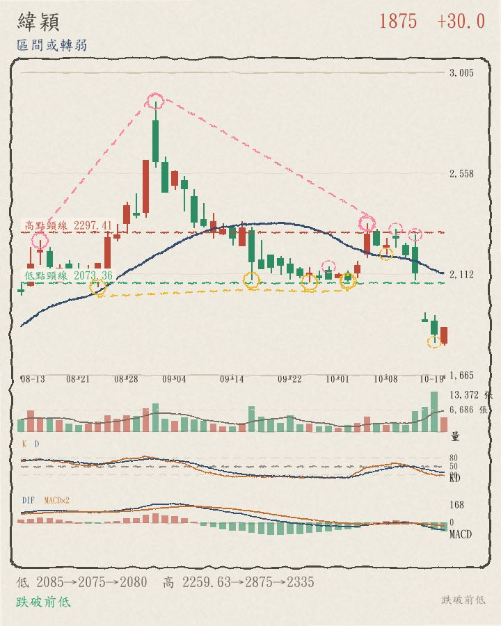
12:31 盤中 1875（+1.63%），比加權指數強 2.64 個百分點、跌破月線 2128.25，離高點頸線 2297.41 還差 18.4%，轉折還沒走出明顯方向。
- 月線位置：現價 1875 在月線 2128.25 之下（-11.9%）；5 日線 2067 也在月線之下（短均在下）；月線向下
- 量能：以已過交易時間推估，今天成交量約是 20 日均量的 1.67 倍（爆量），比 20 日均量大不少；上漲又量增，量價配合
- 關鍵價位：已跌破前一個轉折低點；高點頸線 2297.41 還在現價上方 18.4%；前一交易日高點 1930（低於 2.8%）；今天盤中高點 1875（高於 0.0%）；今天盤中低點 1795（高於 4.5%）
- 轉折結構：低點 2085、2075、2080 與高點 2259.63、2875、2335 都沒有明顯遞增，屬於區間震盪或轉弱；還沒確認的轉折低點 10-08 2200、10-16 1810；還沒確認的轉折高點 10-12 2310、10-14 2285（圖上虛線小圈）
友達 2409 上市
36.1 +0.2（+0.56%）
上升趨勢（底底高＋頭頭高） 盤中成交值 85.38 億・全榜第 23 名（上市第 18 名）・相對大盤 +1.57
好條件 6/8：站上月線、月線向上、底底高、頭頭高、相對大盤強、守住今日高檔（距今日高點 1% 內）
不好條件 0/8：無
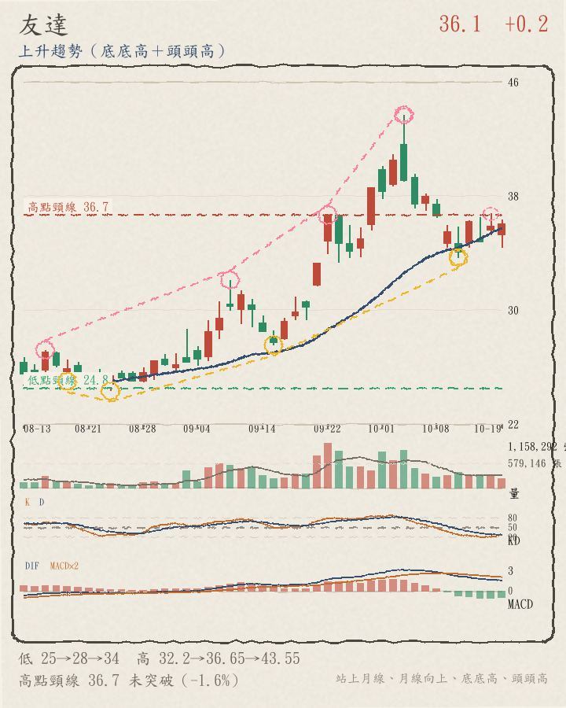
12:31 盤中 36.1（+0.56%），比加權指數強 1.57 個百分點、站上月線 35.44，離高點頸線 36.7 還差 1.6%，轉折結構仍是底底高＋頭頭高。
- 月線位置：現價 36.1 在月線 35.44 之上（+1.9%）；5 日線 35.35 也在月線之下（短均在下）；月線向上
- 量能：以已過交易時間推估，今天成交量約是 20 日均量的 0.56 倍（量縮），比 20 日均量少很多；上漲但量縮，量價背離
- 關鍵價位：高點頸線 36.7 還沒突破，差 1.6%；前一交易日高點 36.75（低於 1.8%）；今天盤中高點 36.35（低於 0.7%）；今天盤中低點 34.45（高於 4.8%）
- 轉折結構：低點 24.6、27.75、33.75 一路墊高、高點 32.2、36.65、43.55 也一路墊高，是底底高＋頭頭高；還沒確認的轉折低點 10-13 33.75；還沒確認的轉折高點 10-05 43.55、10-16 36.75（圖上虛線小圈）
臻鼎-KY 4958 上市
546 -11.0（-1.97%）
底部墊高、未過前高 盤中成交值 85.31 億・全榜第 24 名（上市第 19 名）・相對大盤 -0.96
好條件 3/8：站上月線、月線向上、底底高
不好條件 2/8：今日下跌、相對大盤弱
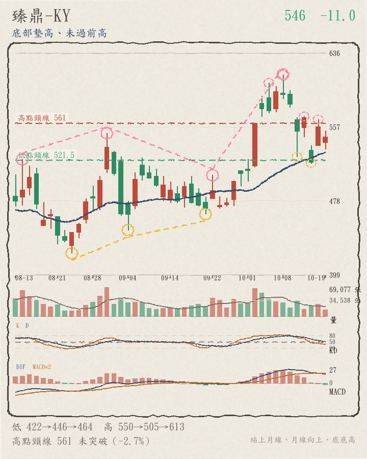
12:31 盤中 546（-1.97%），比加權指數弱 0.96 個百分點、站上月線 526.975，離高點頸線 561 還差 2.7%，底部還在墊高（但高點沒同步創高）。
- 月線位置：現價 546 在月線 526.975 之上（+3.6%）；5 日線 555.2 也在月線之上（短均在上）；月線向上
- 量能：以已過交易時間推估，今天成交量約是 20 日均量的 0.62 倍（量縮），比 20 日均量少很多
- 關鍵價位：高點頸線 561 還沒突破，差 2.7%；前一交易日高點 565（低於 3.4%）；今天盤中高點 553（低於 1.3%）；今天盤中低點 533（高於 2.4%）
- 轉折結構：低點 421.5、446.5、463.5 墊高（底底高），但高點 550、505、613 沒有同步創高；還沒確認的轉折低點 10-13 525、10-15 518；還沒確認的轉折高點 10-14 568、10-16 565（圖上虛線小圈）
尖點 8021 上市
529 +35.0（+7.09%）
區間或轉弱 盤中成交值 78.33 億・全榜第 25 名（上市第 20 名）・相對大盤 +8.10
好條件 5/8：站上月線、月線向上、突破頸線、相對大盤強、攻擊量（量增＋上漲）
不好條件 0/8：無
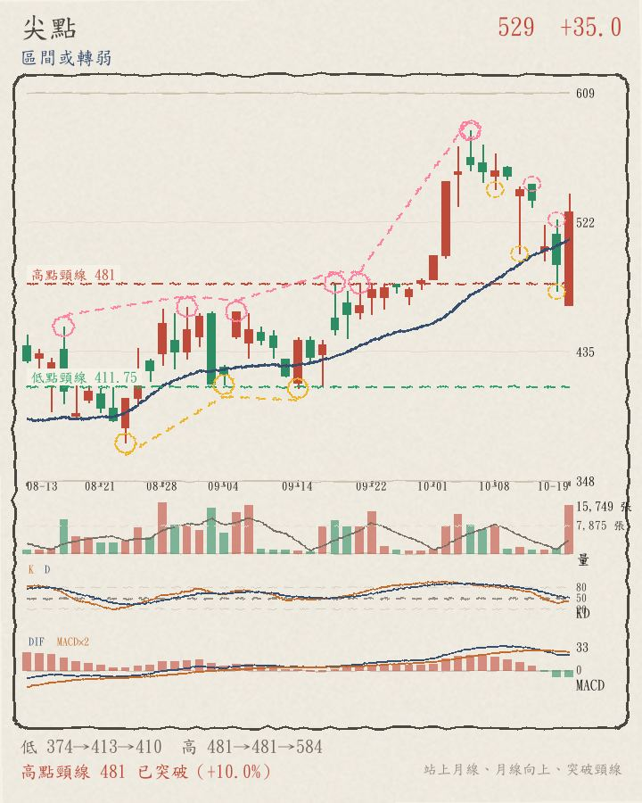
12:31 盤中 529（+7.09%），比加權指數強 8.10 個百分點、站上月線 506.207，已突破高點頸線 481，轉折還沒走出明顯方向。
- 月線位置：現價 529 在月線 506.207 之上（+4.5%）；5 日線 526.8 也在月線之上（短均在上）；月線向上
- 量能：以已過交易時間推估，今天成交量約是 20 日均量的 3.64 倍（爆量），比 20 日均量大不少；上漲又量增，量價配合
- 關鍵價位：高點頸線 481 已站上；前一交易日高點 524（高於 1.0%）；今天盤中高點 541（低於 2.2%）；今天盤中低點 466（高於 13.5%）
- 轉折結構：低點 373.5、413、410.5 與高點 481、481、584 都沒有明顯遞增，屬於區間震盪或轉弱；還沒確認的轉折低點 10-13 501、10-16 475.5；還沒確認的轉折高點 10-14 548、10-16 524（圖上虛線小圈）
南電 8046 上市
1370 +15.0（+1.11%）
底部墊高、未過前高 盤中成交值 78.21 億・全榜第 26 名（上市第 21 名）・相對大盤 +2.12
好條件 4/8：站上月線、月線向上、底底高、相對大盤強
不好條件 0/8：無
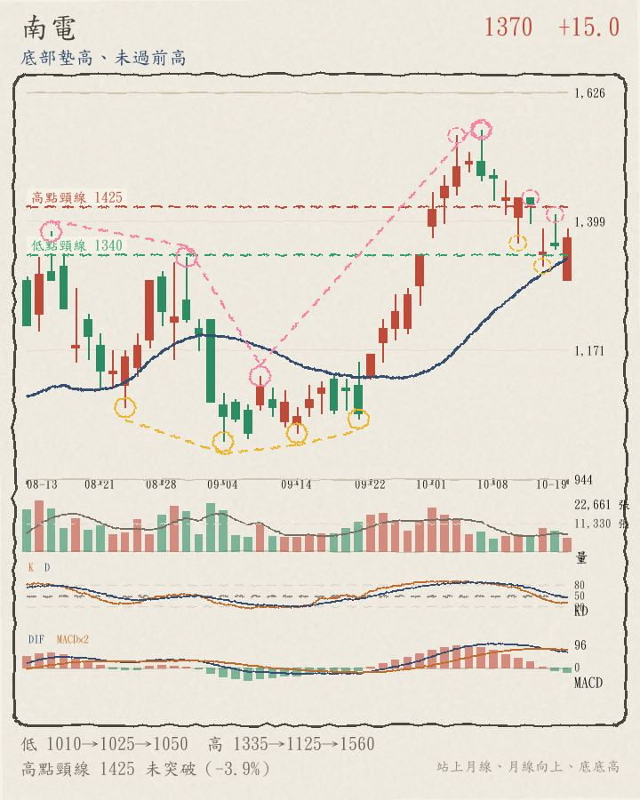
12:31 盤中 1370（+1.11%），比加權指數強 2.12 個百分點、站上月線 1320，離高點頸線 1425 還差 3.9%，底部還在墊高（但高點沒同步創高）。
- 月線位置：現價 1370 在月線 1320 之上（+3.8%）；5 日線 1402 也在月線之上（短均在上）；月線向上
- 量能：以已過交易時間推估，今天成交量約是 20 日均量的 0.67 倍（量縮），比 20 日均量少很多；上漲但量縮，量價背離
- 關鍵價位：高點頸線 1425 還沒突破，差 3.9%；前一交易日高點 1410（低於 2.8%）；今天盤中高點 1385（低於 1.1%）；今天盤中低點 1295（高於 5.8%）
- 轉折結構：低點 1010、1025、1050 墊高（底底高），但高點 1335、1125、1560 沒有同步創高；還沒確認的轉折低點 10-13 1360、10-15 1320；還沒確認的轉折高點 10-14 1440、10-16 1410（圖上虛線小圈）
禾伸堂 3026 上市
743 -63.0（-7.82%）
高點墊高、底部不穩 盤中成交值 76 億・全榜第 27 名（上市第 22 名）・相對大盤 -6.81
好條件 2/8：月線向上、頭頭高
不好條件 6/8：跌破前低、今日下跌、相對大盤弱、在月線之下、量增下跌（出貨）、跌破昨日低點
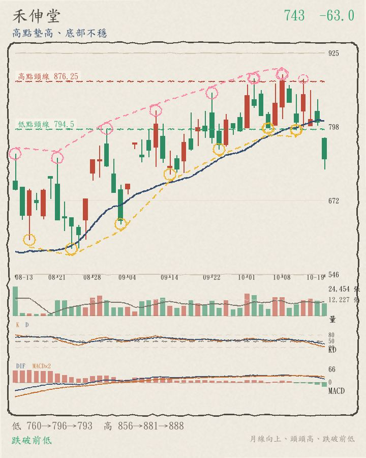
12:31 盤中 743（-7.82%），比加權指數弱 6.81 個百分點、跌破月線 809.9，離高點頸線 876.25 還差 15.2%，高點還在墊高（但底部沒同步墊高）。
- 月線位置：現價 743 在月線 809.9 之下（-8.3%）；5 日線 823.4 也在月線之上（短均在上）；月線向上
- 量能：以已過交易時間推估，今天成交量約是 20 日均量的 1.24 倍（量增），比 20 日均量大不少；下跌卻量增，量價背離
- 關鍵價位：已跌破前一個轉折低點；高點頸線 876.25 還在現價上方 15.2%；前一交易日高點 845（低於 12.1%）；今天盤中高點 780（低於 4.7%）；今天盤中低點 726（高於 2.3%）
- 轉折結構：高點 856、881、888 墊高（頭頭高），但低點 760、796、793 沒有同步墊高；還沒確認的轉折低點 10-06 796、10-13 793；還沒確認的轉折高點 10-08 888、10-14 880（圖上虛線小圈）
智邦 2345 上市
2010 +30.0（+1.52%）
區間或轉弱 盤中成交值 70.63 億・全榜第 28 名（上市第 23 名）・相對大盤 +2.53
好條件 4/8：站上月線、月線向上、突破頸線、相對大盤強
不好條件 0/8：無
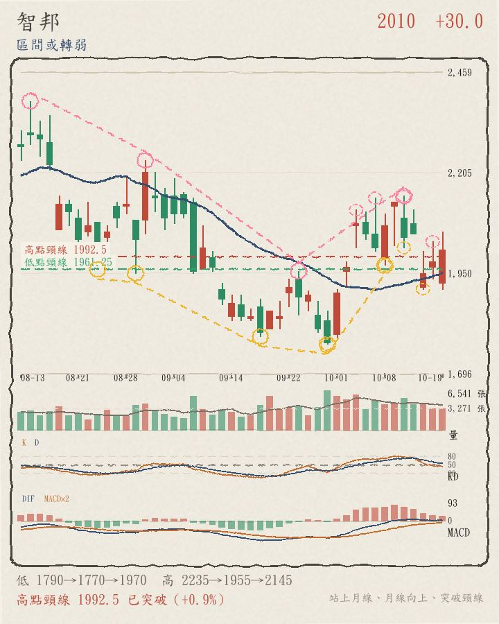
12:31 盤中 2010（+1.52%），比加權指數強 2.53 個百分點、站上月線 1942.25，已突破高點頸線 1992.5，轉折還沒走出明顯方向。
- 月線位置：現價 2010 在月線 1942.25 之上（+3.5%）；5 日線 2030 也在月線之上（短均在上）；月線向上
- 量能：以已過交易時間推估，今天成交量約是 20 日均量的 1.06 倍（量平），比 20 日均量大一些
- 關鍵價位：高點頸線 1992.5 已站上；前一交易日高點 2030（低於 1.0%）；今天盤中高點 2055（低於 2.2%）；今天盤中低點 1910（高於 5.2%）
- 轉折結構：低點 1790、1770、1970 與高點 2235、1955、2145 都沒有明顯遞增，屬於區間震盪或轉弱；還沒確認的轉折低點 10-13 2015、10-15 1910；還沒確認的轉折高點 10-13 2145、10-16 2030（圖上虛線小圈）
台塑化 6505 上市
116 -6.5（-5.31%）
上升趨勢（底底高＋頭頭高） 盤中成交值 70.25 億・全榜第 29 名（上市第 24 名）・相對大盤 -4.30
好條件 5/8：站上月線、月線向上、底底高、頭頭高、突破頸線
不好條件 3/8：今日下跌、相對大盤弱、量增下跌（出貨）
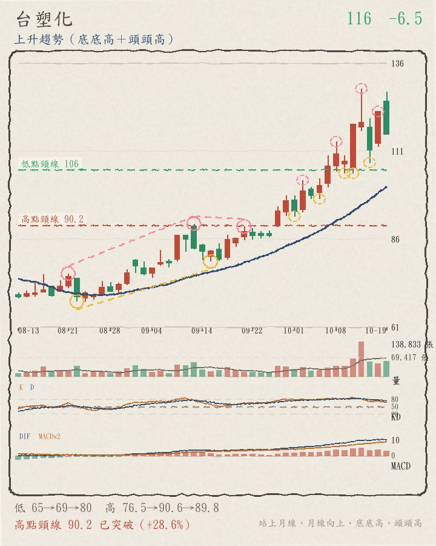
12:31 盤中 116（-5.31%），比加權指數弱 4.30 個百分點、站上月線 99.39，已突破高點頸線 90.2，轉折結構仍是底底高＋頭頭高。
- 月線位置：現價 116 在月線 99.39 之上（+16.7%）；5 日線 116.2 也在月線之上（短均在上）；月線向上
- 量能：以已過交易時間推估，今天成交量約是 20 日均量的 2.15 倍（爆量），比 20 日均量大不少；下跌卻量增，量價背離
- 關鍵價位：高點頸線 90.2 已站上；前一交易日高點 122.5（低於 5.3%）；今天盤中高點 128（低於 9.4%）；今天盤中低點 116（高於 0.0%）
- 轉折結構：低點 65.4、68.6、80 一路墊高、高點 76.5、90.6、89.8 也一路墊高，是底底高＋頭頭高；還沒確認的轉折低點 10-13 105、10-15 108；還沒確認的轉折高點 10-14 129、10-16 122.5（圖上虛線小圈）
華邦電 2344 上市
155 -6.5（-4.02%）
底部墊高、未過前高 盤中成交值 69.74 億・全榜第 30 名（上市第 25 名）・相對大盤 -3.01
好條件 2/8：底底高、守住今日高檔（距今日高點 1% 內）
不好條件 6/8：跌破前低、今日下跌、相對大盤弱、在月線之下、跌破昨日低點、月線下彎
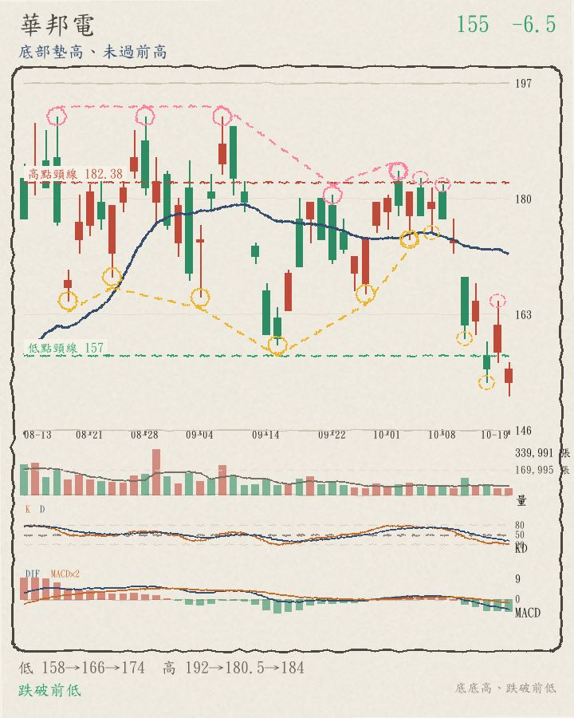
12:31 盤中 155（-4.02%），比加權指數弱 3.01 個百分點、跌破月線 172.6，離高點頸線 182.38 還差 15.0%，底部還在墊高（但高點沒同步創高）。
- 月線位置：現價 155 在月線 172.6 之下（-10.2%）；5 日線 163.4 也在月線之下（短均在下）；月線向下
- 量能：以已過交易時間推估，今天成交量約是 20 日均量的 0.75 倍（量平），比 20 日均量少很多
- 關鍵價位：已跌破前一個轉折低點；高點頸線 182.38 還在現價上方 15.0%；前一交易日高點 165（低於 6.1%）；今天盤中高點 156（低於 0.6%）；今天盤中低點 151（高於 2.6%）
- 轉折結構：低點 158.5、166、174 墊高（底底高），但高點 192、180.5、184 沒有同步創高；還沒確認的轉折低點 10-13 159.5、10-15 153；還沒確認的轉折高點 10-08 182、10-16 165（圖上虛線小圈）
日月光投控 3711 上市
668 -3.0（-0.45%）
上升趨勢（底底高＋頭頭高） 盤中成交值 66.65 億・全榜第 31 名（上市第 26 名）・相對大盤 +0.56
好條件 4/8：月線向上、底底高、頭頭高、相對大盤強
不好條件 3/8：跌破前低、今日下跌、在月線之下
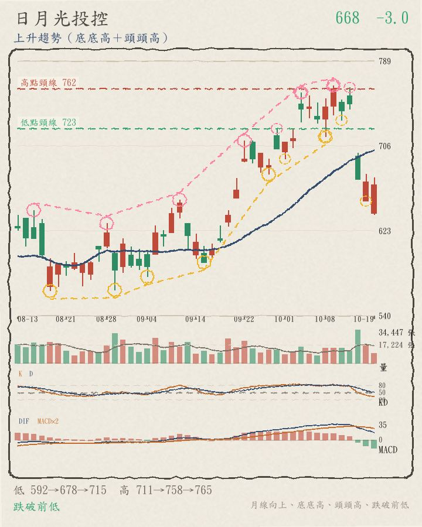
12:31 盤中 668（-0.45%），比加權指數強 0.56 個百分點、跌破月線 698.65，離高點頸線 762 還差 12.3%，轉折結構仍是底底高＋頭頭高。
- 月線位置：現價 668 在月線 698.65 之下（-4.4%）；5 日線 718.6 也在月線之上（短均在上）；月線向上
- 量能：以已過交易時間推估，今天成交量約是 20 日均量的 0.87 倍（量平），比 20 日均量少一些
- 關鍵價位：已跌破前一個轉折低點；高點頸線 762 還在現價上方 12.3%；前一交易日高點 678（低於 1.5%）；今天盤中高點 675（低於 1.0%）；今天盤中低點 639（高於 4.5%）
- 轉折結構：低點 592、678、715 一路墊高、高點 711、758、765 也一路墊高，是底底高＋頭頭高；還沒確認的轉折低點 10-13 731、10-16 652；還沒確認的轉折高點 10-12 765、10-14 763（圖上虛線小圈）
台光電 2383 上市
5110 -55.0（-1.06%）
區間或轉弱 盤中成交值 66.02 億・全榜第 32 名（上市第 27 名）・相對大盤 -0.05
好條件 2/8：月線向上、守住今日高檔（距今日高點 1% 內）
不好條件 3/8：今日下跌、相對大盤弱、在月線之下
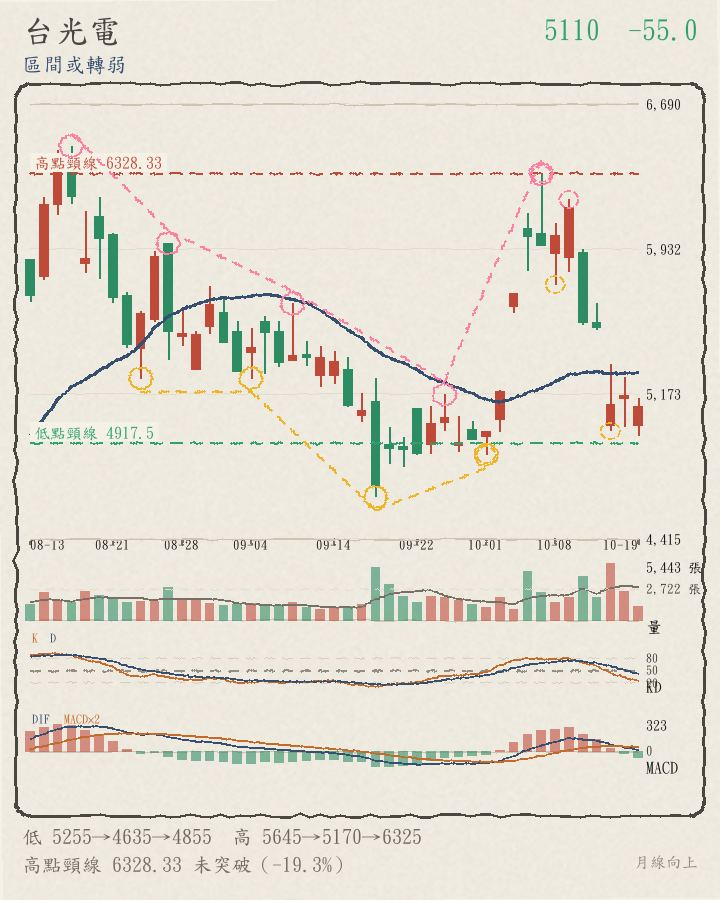
12:31 盤中 5110（-1.06%），比加權指數弱 0.05 個百分點、跌破月線 5282.75，離高點頸線 6328.33 還差 19.3%，轉折還沒走出明顯方向。
- 月線位置：現價 5110 在月線 5282.75 之下（-3.3%）；5 日線 5500 也在月線之上（短均在上）；月線向上
- 量能：以已過交易時間推估，今天成交量約是 20 日均量的 0.66 倍（量縮），比 20 日均量少很多
- 關鍵價位：高點頸線 6328.33 還沒突破，差 19.3%；前一交易日高點 5260（低於 2.9%）；今天盤中高點 5150（低於 0.8%）；今天盤中低點 4955（高於 3.1%）
- 轉折結構：低點 5255、4635、4855 與高點 5645、5170、6325 都沒有明顯遞增，屬於區間震盪或轉弱；還沒確認的轉折低點 10-08 5745、10-15 4980；還沒確認的轉折高點 10-07 6325、10-12 6190（圖上虛線小圈）
華通 2313 上市
247 -1.0（-0.40%）
底部墊高、未過前高 盤中成交值 64.26 億・全榜第 33 名（上市第 28 名）・相對大盤 +0.61
好條件 4/8：站上月線、月線向上、底底高、相對大盤強
不好條件 2/8：今日下跌、量增下跌（出貨）
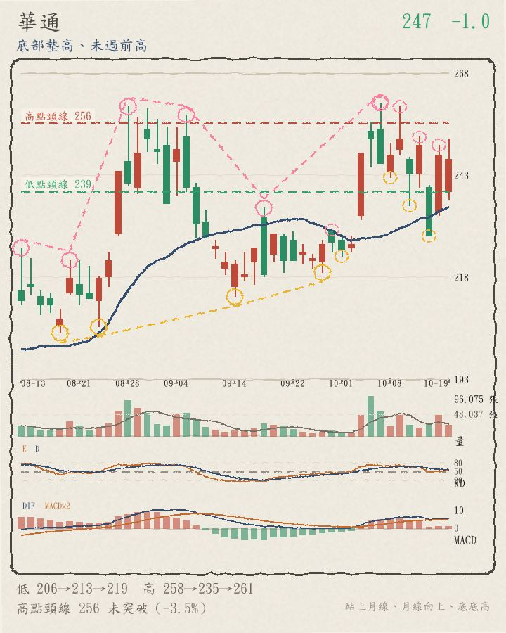
12:31 盤中 247（-0.40%），比加權指數強 0.61 個百分點、站上月線 234.1，離高點頸線 256 還差 3.5%，底部還在墊高（但高點沒同步創高）。
- 月線位置：現價 247 在月線 234.1 之上（+5.5%）；5 日線 244.4 也在月線之上（短均在上）；月線向上
- 量能：以已過交易時間推估，今天成交量約是 20 日均量的 1.26 倍（量增），比 20 日均量大不少；下跌卻量增，量價背離
- 關鍵價位：高點頸線 256 還沒突破，差 3.5%；前一交易日高點 250.5（低於 1.4%）；今天盤中高點 252（低於 2.0%）；今天盤中低點 237（高於 4.2%）
- 轉折結構：低點 205.5、213、219 墊高（底底高），但高點 258、235、261 沒有同步創高；還沒確認的轉折低點 10-13 235.5、10-15 228；還沒確認的轉折高點 10-14 252.5、10-16 250.5（圖上虛線小圈）
聯亞 3081 上櫃
2600 +55.0（+2.16%）
高點墊高、底部不穩 盤中成交值 63.7 億・全榜第 34 名（上櫃第 6 名）・相對大盤 +3.17
好條件 3/8：頭頭高、相對大盤強、守住今日高檔（距今日高點 1% 內）
不好條件 2/8：在月線之下、月線下彎
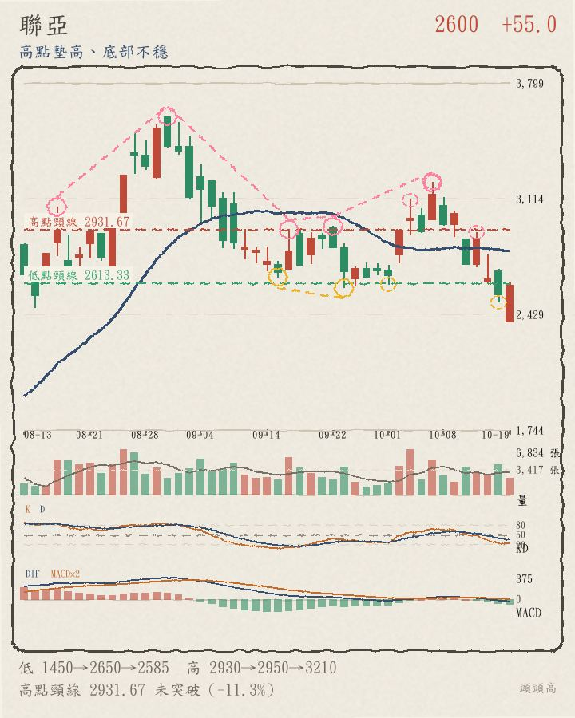
12:31 盤中 2600（+2.16%），比加權指數強 3.17 個百分點、跌破月線 2812.5，離高點頸線 2931.67 還差 11.3%，高點還在墊高（但底部沒同步墊高）。
- 月線位置：現價 2600 在月線 2812.5 之下（-7.6%）；5 日線 2763 也在月線之下（短均在下）；月線向下
- 量能：以已過交易時間推估，今天成交量約是 20 日均量的 0.98 倍（量平），跟 20 日均量差不多
- 關鍵價位：高點頸線 2931.67 還沒突破，差 11.3%；前一交易日高點 2695（低於 3.5%）；今天盤中高點 2620（低於 0.8%）；今天盤中低點 2385（高於 9.0%）
- 轉折結構：高點 2930、2950、3210 墊高（頭頭高），但低點 1450、2650、2585 沒有同步墊高；還沒確認的轉折低點 10-01 2605、10-16 2500；還沒確認的轉折高點 10-07 3210、10-14 2915（圖上虛線小圈）
奇鋐 3017 上市
3310 -5.0（-0.15%）
區間或轉弱 盤中成交值 60.08 億・全榜第 35 名（上市第 29 名）・相對大盤 +0.86
好條件 2/8：相對大盤強、守住今日高檔（距今日高點 1% 內）
不好條件 3/8：今日下跌、在月線之下、月線下彎
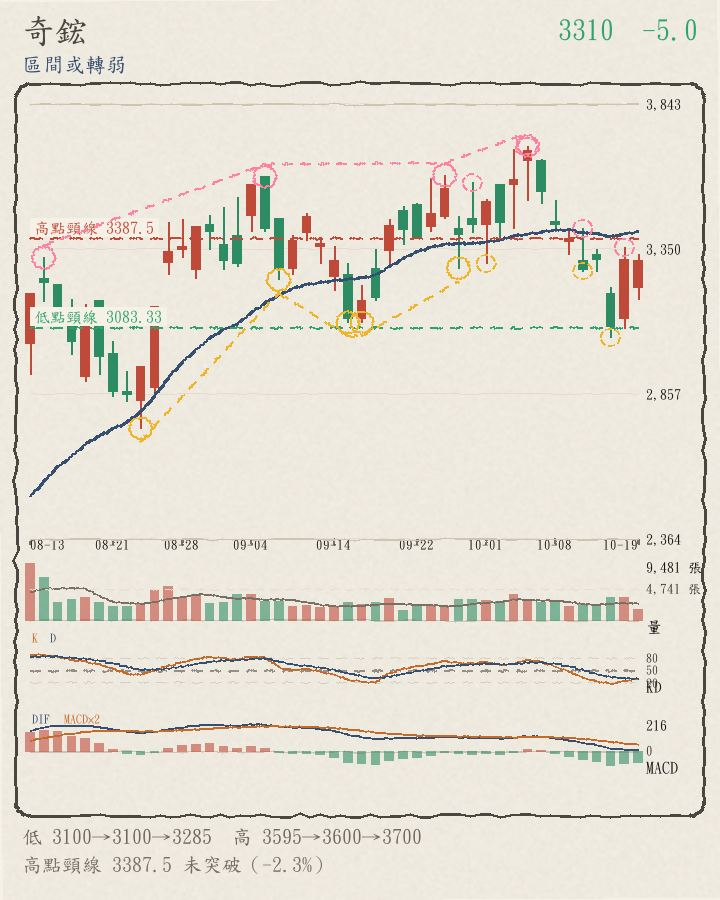
12:31 盤中 3310（-0.15%），比加權指數強 0.86 個百分點、跌破月線 3402，離高點頸線 3387.5 還差 2.3%，轉折還沒走出明顯方向。
- 月線位置：現價 3310 在月線 3402 之下（-2.7%）；5 日線 3276 也在月線之下（短均在下）；月線向下
- 量能：以已過交易時間推估，今天成交量約是 20 日均量的 0.81 倍（量平），比 20 日均量少很多
- 關鍵價位：高點頸線 3387.5 還沒突破，差 2.3%；前一交易日高點 3355（低於 1.3%）；今天盤中高點 3330（低於 0.6%）；今天盤中低點 3180（高於 4.1%）
- 轉折結構：低點 3100、3100、3285 與高點 3595、3600、3700 都沒有明顯遞增，屬於區間震盪或轉弱；還沒確認的轉折低點 10-13 3275、10-15 3050；還沒確認的轉折高點 10-13 3420、10-16 3355（圖上虛線小圈）
量平
↑ 回上方清單
大量 3167 上市
1005 -50.0（-4.74%）
上升趨勢（底底高＋頭頭高） 盤中成交值 59.93 億・全榜第 36 名（上市第 30 名）・相對大盤 -3.73
好條件 4/8：站上月線、月線向上、底底高、頭頭高
不好條件 3/8：今日下跌、相對大盤弱、量增下跌（出貨）
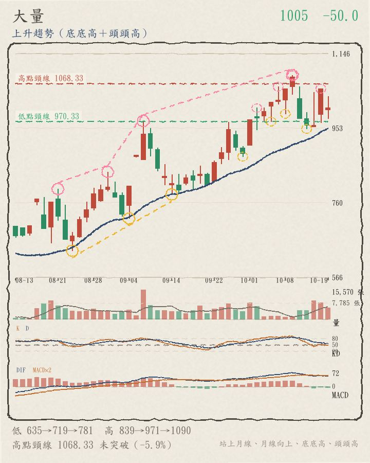
12:31 盤中 1005（-4.74%），比加權指數弱 3.73 個百分點、站上月線 943.15，離高點頸線 1068.33 還差 5.9%，轉折結構仍是底底高＋頭頭高。
- 月線位置：現價 1005 在月線 943.15 之上（+6.6%）；5 日線 1007.4 也在月線之上（短均在上）；月線向上
- 量能：以已過交易時間推估，今天成交量約是 20 日均量的 1.70 倍（爆量），比 20 日均量大不少；下跌卻量增，量價背離
- 關鍵價位：高點頸線 1068.33 還沒突破，差 5.9%；前一交易日高點 1055（低於 4.7%）；今天盤中高點 1035（低於 2.9%）；今天盤中低點 977（高於 2.9%）
- 轉折結構：低點 635、719、781 一路墊高、高點 839、971、1090 也一路墊高，是底底高＋頭頭高；還沒確認的轉折低點 10-08 990、10-14 951；還沒確認的轉折高點 10-12 1090、10-16 1055（圖上虛線小圈）
京元電子 2449 上市
266 -9.0（-3.27%）
區間或轉弱 盤中成交值 58.24 億・全榜第 37 名（上市第 31 名）・相對大盤 -2.26
好條件 2/8：月線向上、守住今日高檔（距今日高點 1% 內）
不好條件 5/8：跌破前低、今日下跌、相對大盤弱、在月線之下、跌破昨日低點
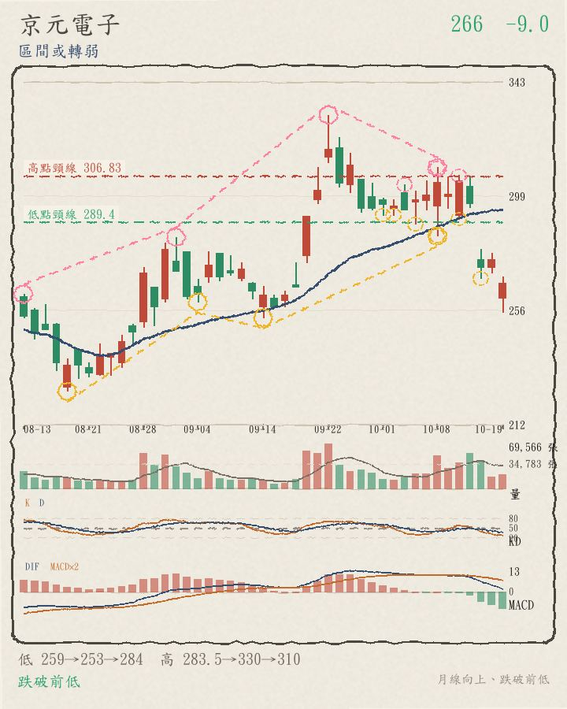
12:31 盤中 266（-3.27%），比加權指數弱 2.26 個百分點、跌破月線 293.825，離高點頸線 306.83 還差 13.3%，轉折還沒走出明顯方向。
- 月線位置：現價 266 在月線 293.825 之下（-9.5%）；5 日線 289.7 也在月線之下（短均在下）；月線向上
- 量能：以已過交易時間推估，今天成交量約是 20 日均量的 0.88 倍（量平），比 20 日均量少一些
- 關鍵價位：已跌破前一個轉折低點；高點頸線 306.83 還在現價上方 13.3%；前一交易日高點 277.5（低於 4.1%）；今天盤中高點 268.5（低於 0.9%）；今天盤中低點 255（高於 4.3%）
- 轉折結構：低點 259、253、284 與高點 283.5、330、310 都沒有明顯遞增，屬於區間震盪或轉弱；還沒確認的轉折低點 10-13 290.5、10-15 268；還沒確認的轉折高點 10-08 310、10-13 307（圖上虛線小圈）
高力 8996 上市
1555 -15.0（-0.96%）
上升趨勢（底底高＋頭頭高） 盤中成交值 55.33 億・全榜第 38 名（上市第 32 名）・相對大盤 +0.05
好條件 4/8：月線向上、底底高、頭頭高、相對大盤強
不好條件 3/8：今日下跌、在月線之下、量增下跌（出貨）
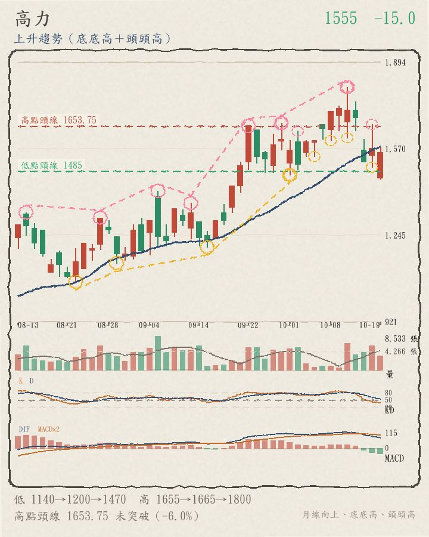
12:31 盤中 1555（-0.96%），比加權指數強 0.05 個百分點、跌破月線 1564.25，離高點頸線 1653.75 還差 6.0%，轉折結構仍是底底高＋頭頭高。
- 月線位置：現價 1555 在月線 1564.25 之下（-0.6%）；5 日線 1642 也在月線之上（短均在上）；月線向上
- 量能：以已過交易時間推估，今天成交量約是 20 日均量的 1.47 倍（量增），比 20 日均量大不少；下跌卻量增，量價背離
- 關鍵價位：高點頸線 1653.75 還沒突破，差 6.0%；前一交易日高點 1660（低於 6.3%）；今天盤中高點 1575（低於 1.3%）；今天盤中低點 1455（高於 6.9%）
- 轉折結構：低點 1140、1200、1470 一路墊高、高點 1655、1665、1800 也一路墊高，是底底高＋頭頭高；還沒確認的轉折低點 10-13 1610、10-16 1500；還沒確認的轉折高點 10-13 1800、10-16 1660（圖上虛線小圈）
富世達 6805 上市
2325 +75.0（+3.33%）
區間或轉弱 盤中成交值 50.01 億・全榜第 39 名（上市第 33 名）・相對大盤 +4.34
好條件 4/8：月線向上、突破頸線、相對大盤強、攻擊量（量增＋上漲）
不好條件 1/8：在月線之下
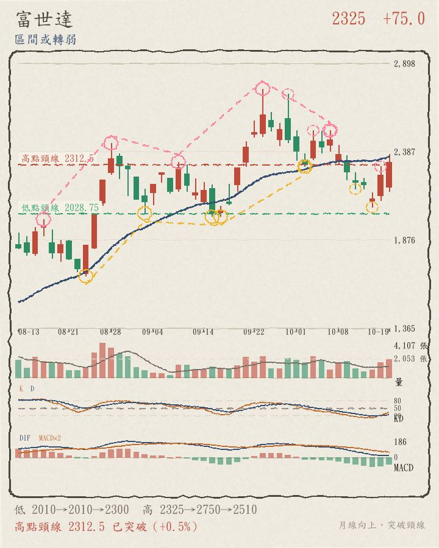
12:31 盤中 2325（+3.33%），比加權指數強 4.34 個百分點、跌破月線 2343.75，已突破高點頸線 2312.5，轉折還沒走出明顯方向。
- 月線位置：現價 2325 在月線 2343.75 之下（-0.8%）；5 日線 2208 也在月線之下（短均在下）；月線向上
- 量能：以已過交易時間推估，今天成交量約是 20 日均量的 1.76 倍（爆量），比 20 日均量大不少；上漲又量增，量價配合
- 關鍵價位：高點頸線 2312.5 已站上；前一交易日高點 2300（高於 1.1%）；今天盤中高點 2370（低於 1.9%）；今天盤中低點 2155（高於 7.9%）
- 轉折結構：低點 2010、2010、2300 與高點 2325、2750、2510 都沒有明顯遞增，屬於區間震盪或轉弱；還沒確認的轉折低點 10-13 2170、10-15 2065；還沒確認的轉折高點 10-07 2510、10-16 2300（圖上虛線小圈）
力積電 6770 上市
64.7 -2.6（-3.86%）
區間或轉弱 盤中成交值 49.28 億・全榜第 40 名（上市第 34 名）・相對大盤 -2.85
好條件 1/8：守住今日高檔（距今日高點 1% 內）
不好條件 6/8：跌破前低、今日下跌、相對大盤弱、在月線之下、跌破昨日低點、月線下彎
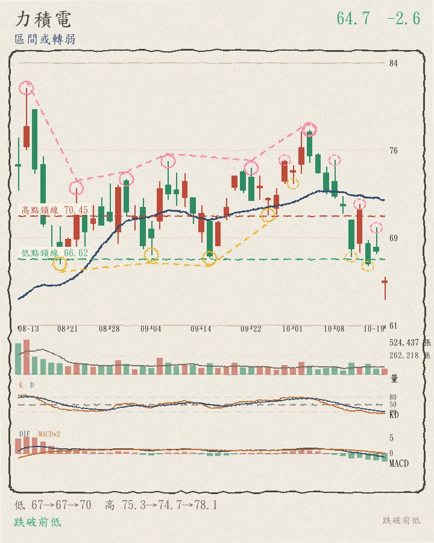
12:31 盤中 64.7（-3.86%），比加權指數弱 2.85 個百分點、跌破月線 72.08，離高點頸線 70.45 還差 8.2%，轉折還沒走出明顯方向。
- 月線位置：現價 64.7 在月線 72.08 之下（-10.2%）；5 日線 68.68 也在月線之下（短均在下）；月線向下
- 量能：以已過交易時間推估，今天成交量約是 20 日均量的 0.85 倍（量平），比 20 日均量少一些
- 關鍵價位：已跌破前一個轉折低點；高點頸線 70.45 還在現價上方 8.2%；前一交易日高點 69.4（低於 6.8%）；今天盤中高點 65（低於 0.5%）；今天盤中低點 63（高於 2.7%）
- 轉折結構：低點 67、66.7、70.5 與高點 75.3、74.7、78.1 都沒有明顯遞增，屬於區間震盪或轉弱；還沒確認的轉折低點 10-13 66.8、10-15 66；還沒確認的轉折高點 10-14 71.5、10-16 69.4（圖上虛線小圈）
鴻海 2317 上市
239.5 -4.5（-1.84%）
底部墊高、未過前高 盤中成交值 48.35 億・全榜第 41 名（上市第 35 名）・相對大盤 -0.83
好條件 1/8：底底高
不好條件 7/8：跌破前低、今日下跌、相對大盤弱、在月線之下、貼近今日低點（1% 內）、跌破昨日低點、月線下彎
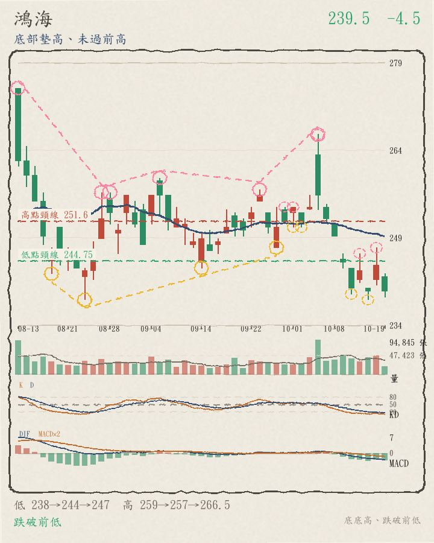
12:31 盤中 239.5（-1.84%），比加權指數弱 0.83 個百分點、跌破月線 249.375，離高點頸線 251.6 還差 4.8%，底部還在墊高（但高點沒同步創高）。
- 月線位置：現價 239.5 在月線 249.375 之下（-4.0%）；5 日線 242.2 也在月線之下（短均在下）；月線向下
- 量能：以已過交易時間推估，今天成交量約是 20 日均量的 0.71 倍（量平），比 20 日均量少很多
- 關鍵價位：已跌破前一個轉折低點；高點頸線 251.6 還在現價上方 4.8%；前一交易日高點 247（低於 3.0%）；今天盤中高點 242.5（低於 1.2%）；今天盤中低點 238.5（高於 0.4%）
- 轉折結構：低點 238、243.5、247 墊高（底底高），但高點 259、257、266.5 沒有同步創高；還沒確認的轉折低點 10-13 239、10-15 238；還沒確認的轉折高點 10-14 246、10-16 247（圖上虛線小圈）
玉晶光 3406 上市
1035 -50.0（-4.61%）
高點墊高、底部不穩 盤中成交值 44.7 億・全榜第 42 名（上市第 36 名）・相對大盤 -3.60
好條件 3/8：站上月線、月線向上、頭頭高
不好條件 3/8：今日下跌、相對大盤弱、跌破昨日低點
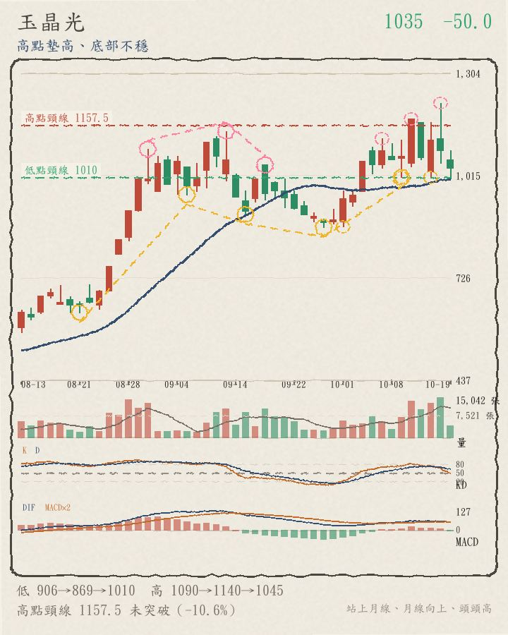
12:31 盤中 1035（-4.61%），比加權指數弱 3.60 個百分點、站上月線 1003.05，離高點頸線 1157.5 還差 10.6%，高點還在墊高（但底部沒同步墊高）。
- 月線位置：現價 1035 在月線 1003.05 之上（+3.2%）；5 日線 1102 也在月線之上（短均在上）；月線向上
- 量能：以已過交易時間推估，今天成交量約是 20 日均量的 0.83 倍（量平），比 20 日均量少很多
- 關鍵價位：高點頸線 1157.5 還沒突破，差 10.6%；前一交易日高點 1220（低於 15.2%）；今天盤中高點 1085（低於 4.6%）；今天盤中低點 1005（高於 3.0%）
- 轉折結構：高點 1090、1140、1045 墊高（頭頭高），但低點 906、869、1010 沒有同步墊高；還沒確認的轉折低點 10-12 1010、10-15 1010；還沒確認的轉折高點 10-13 1175、10-16 1220（圖上虛線小圈）
群創 3481 上市
46.8 -1.4（-3.01%）
高點墊高、底部不穩 盤中成交值 44.16 億・全榜第 43 名（上市第 37 名）・相對大盤 -2.00
好條件 3/8：月線向上、頭頭高、守住今日高檔（距今日高點 1% 內）
不好條件 5/8：跌破前低、今日下跌、相對大盤弱、在月線之下、跌破昨日低點
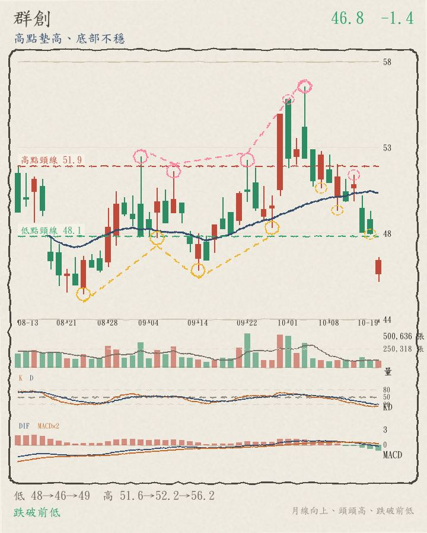
12:31 盤中 46.8（-3.01%），比加權指數弱 2.00 個百分點、跌破月線 50.535，離高點頸線 51.9 還差 9.8%，高點還在墊高（但底部沒同步墊高）。
- 月線位置：現價 46.8 在月線 50.535 之下（-7.4%）；5 日線 49.75 也在月線之下（短均在下）；月線向上
- 量能：以已過交易時間推估，今天成交量約是 20 日均量的 0.62 倍（量縮），比 20 日均量少很多
- 關鍵價位：已跌破前一個轉折低點；高點頸線 51.9 還在現價上方 9.8%；前一交易日高點 49.45（低於 5.4%）；今天盤中高點 46.95（低於 0.3%）；今天盤中低點 45.65（高於 2.5%）
- 轉折結構：高點 51.6、52.2、56.2 墊高（頭頭高），但低點 48、46.25、48.55 沒有同步墊高；還沒確認的轉折低點 10-12 49.5、10-16 48.2；還沒確認的轉折高點 10-05 56.2、10-14 51.4（圖上虛線小圈）
台表科 6278 上市
289 -9.5（-3.18%）
上升趨勢（底底高＋頭頭高） 盤中成交值 43.67 億・全榜第 44 名（上市第 38 名）・相對大盤 -2.17
好條件 5/8：站上月線、月線向上、底底高、頭頭高、突破頸線
不好條件 4/8：今日下跌、相對大盤弱、量增下跌（出貨）、跌破昨日低點
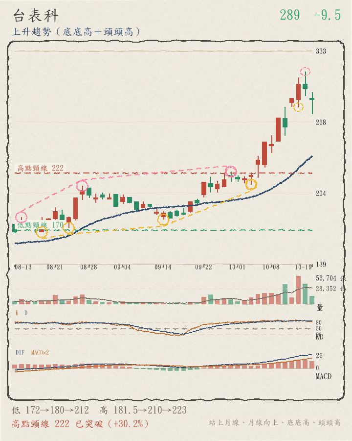
12:31 盤中 289（-3.18%），比加權指數弱 2.17 個百分點、站上月線 232，已突破高點頸線 222，轉折結構仍是底底高＋頭頭高。
- 月線位置：現價 289 在月線 232 之上（+24.6%）；5 日線 285.6 也在月線之上（短均在上）；月線向上
- 量能：以已過交易時間推估，今天成交量約是 20 日均量的 1.36 倍（量增），比 20 日均量大不少；下跌卻量增，量價背離
- 關鍵價位：高點頸線 222 已站上；前一交易日高點 314.5（低於 8.1%）；今天盤中高點 295.5（低於 2.2%）；今天盤中低點 276（高於 4.7%）
- 轉折結構：低點 172、179.5、211.5 一路墊高、高點 181.5、210、223 也一路墊高，是底底高＋頭頭高；還沒確認的轉折低點 10-05 211.5、10-15 282；還沒確認的轉折高點 09-30 223、10-16 314.5（圖上虛線小圈）
信驊 5274 上櫃
15995 -485.0（-2.94%）
區間或轉弱 盤中成交值 42.71 億・全榜第 45 名（上櫃第 7 名）・相對大盤 -1.93
好條件 0/8：無
不好條件 5/8：今日下跌、相對大盤弱、在月線之下、量增下跌（出貨）、月線下彎
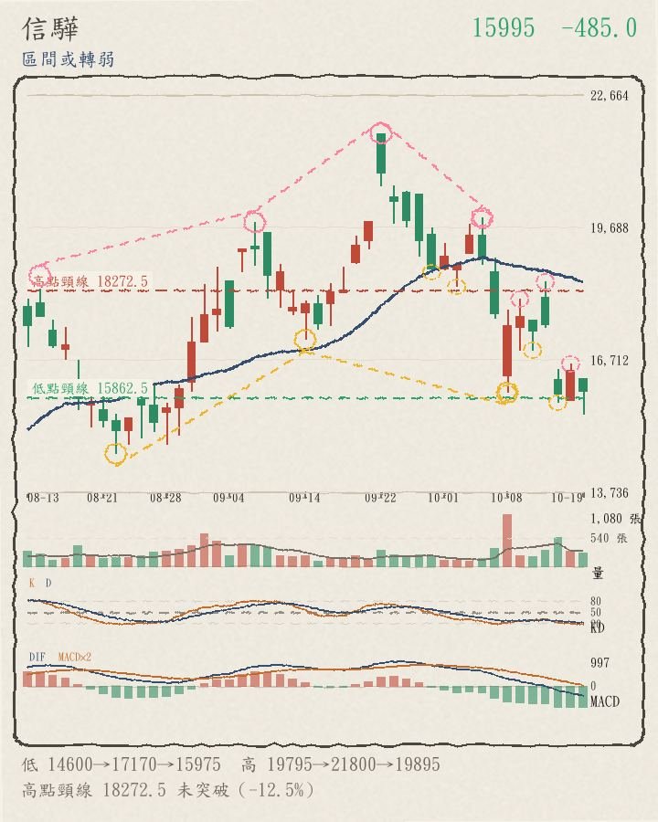
12:31 盤中 15995（-2.94%），比加權指數弱 1.93 個百分點、跌破月線 18569.5，離高點頸線 18272.5 還差 12.5%，轉折還沒走出明顯方向。
- 月線位置：現價 15995 在月線 18569.5 之下（-13.9%）；5 日線 16994 也在月線之下（短均在下）；月線向下
- 量能：以已過交易時間推估，今天成交量約是 20 日均量的 1.30 倍（量增），比 20 日均量大不少；下跌卻量增，量價背離
- 關鍵價位：高點頸線 18272.5 還沒突破，差 12.5%；前一交易日高點 16620（低於 3.8%）；今天盤中高點 16300（低於 1.9%）；今天盤中低點 15500（高於 3.2%）
- 轉折結構：低點 14600、17170、15975 與高點 19795、21800、19895 都沒有明顯遞增，屬於區間震盪或轉弱；還沒確認的轉折低點 10-13 16930、10-15 15750；還沒確認的轉折高點 10-14 18465、10-16 16620（圖上虛線小圈）
量增
↑ 回上方清單
今國光 6209 上市
102 +1.5（+1.49%）
高點墊高、底部不穩 盤中成交值 42.44 億・全榜第 46 名（上市第 39 名）・相對大盤 +2.50
好條件 5/8：站上月線、月線向上、頭頭高、相對大盤強、攻擊量（量增＋上漲）
不好條件 0/8：無
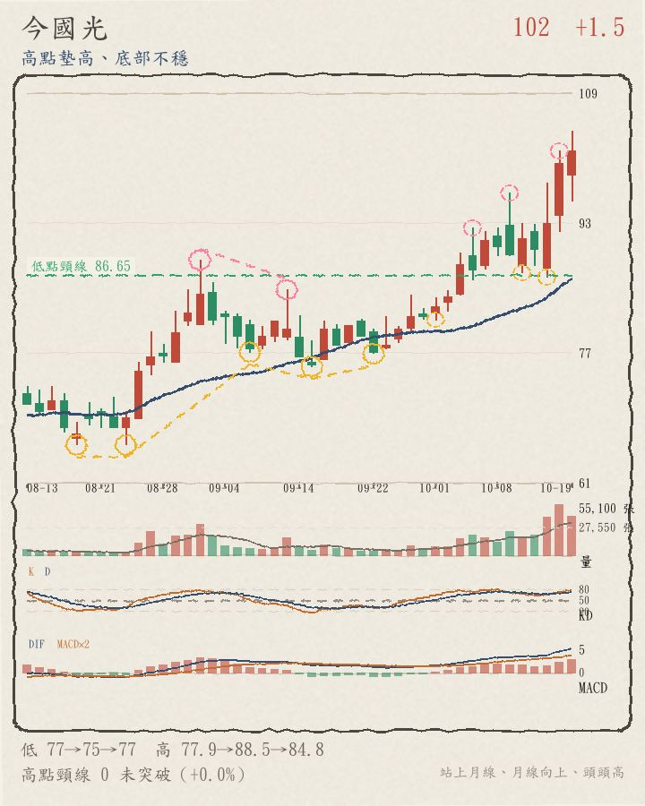
12:31 盤中 102（+1.49%），比加權指數強 2.50 個百分點、站上月線 85.1，高點還在墊高（但底部沒同步墊高）。
- 月線位置：現價 102 在月線 85.1 之上（+19.9%）；5 日線 92.7 也在月線之上（短均在上）；月線向上
- 量能：以已過交易時間推估，今天成交量約是 20 日均量的 3.96 倍（爆量），比 20 日均量大不少；上漲又量增，量價配合
- 關鍵價位：前一交易日高點 102（高於 0.0%）；今天盤中高點 104.5（低於 2.4%）；今天盤中低點 95.8（高於 6.5%）
- 轉折結構：高點 77.9、88.5、84.8 墊高（頭頭高），但低點 77.1、75.3、76.9 沒有同步墊高；還沒確認的轉折低點 10-13 86.9、10-15 86.4；還沒確認的轉折高點 10-12 96.8、10-16 102（圖上虛線小圈）
旺矽 6223 上櫃
5240 +35.0（+0.67%）
區間或轉弱 盤中成交值 41.66 億・全榜第 47 名（上櫃第 8 名）・相對大盤 +1.68
好條件 3/8：月線向上、相對大盤強、攻擊量（量增＋上漲）
不好條件 1/8：在月線之下
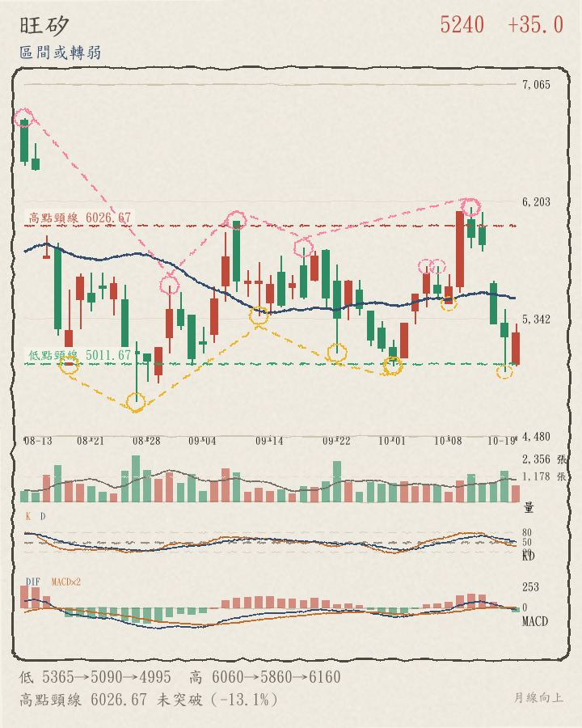
12:31 盤中 5240（+0.67%），比加權指數強 1.68 個百分點、跌破月線 5509，離高點頸線 6026.67 還差 13.1%，轉折還沒走出明顯方向。
- 月線位置：現價 5240 在月線 5509 之下（-4.9%）；5 日線 5692 也在月線之上（短均在上）；月線向上
- 量能：以已過交易時間推估，今天成交量約是 20 日均量的 1.13 倍（量增），比 20 日均量大一些；上漲又量增，量價配合
- 關鍵價位：高點頸線 6026.67 還沒突破，差 13.1%；前一交易日高點 5410（低於 3.1%）；今天盤中高點 5305（低於 1.2%）；今天盤中低點 4995（高於 4.9%）
- 轉折結構：低點 5365、5090、4995 與高點 6060、5860、6160 都沒有明顯遞增，屬於區間震盪或轉弱；還沒確認的轉折低點 10-08 5450、10-16 4950；還沒確認的轉折高點 10-07 5725、10-13 6160（圖上虛線小圈）
精材 3374 上櫃
435 +1.5（+0.35%）
底部墊高、未過前高 盤中成交值 40.18 億・全榜第 48 名（上櫃第 9 名）・相對大盤 +1.36
好條件 4/8：月線向上、底底高、相對大盤強、攻擊量（量增＋上漲）
不好條件 2/8：跌破前低、在月線之下
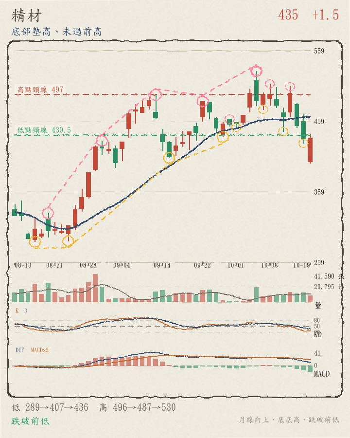
12:31 盤中 435（+0.35%），比加權指數強 1.36 個百分點、跌破月線 464.675，離高點頸線 497 還差 12.5%，底部還在墊高（但高點沒同步創高）。
- 月線位置：現價 435 在月線 464.675 之下（-6.4%）；5 日線 466.4 也在月線之上（短均在上）；月線向上
- 量能：以已過交易時間推估，今天成交量約是 20 日均量的 1.18 倍（量增），比 20 日均量大不少；上漲又量增，量價配合
- 關鍵價位：已跌破前一個轉折低點；高點頸線 497 還在現價上方 12.5%；前一交易日高點 468（低於 7.1%）；今天盤中高點 440.5（低於 1.2%）；今天盤中低點 399（高於 9.0%）
- 轉折結構：低點 289、407、436.5 墊高（底底高），但高點 496、487、530 沒有同步創高；還沒確認的轉折低點 10-13 444、10-16 427.5；還沒確認的轉折高點 10-08 512、10-14 508（圖上虛線小圈）
頎邦 6147 上櫃
205 -2.5（-1.20%）
底部墊高、未過前高 盤中成交值 37.98 億・全榜第 49 名（上櫃第 10 名）・相對大盤 -0.19
好條件 3/8：月線向上、底底高、守住今日高檔（距今日高點 1% 內）
不好條件 5/8：跌破前低、今日下跌、相對大盤弱、在月線之下、跌破昨日低點
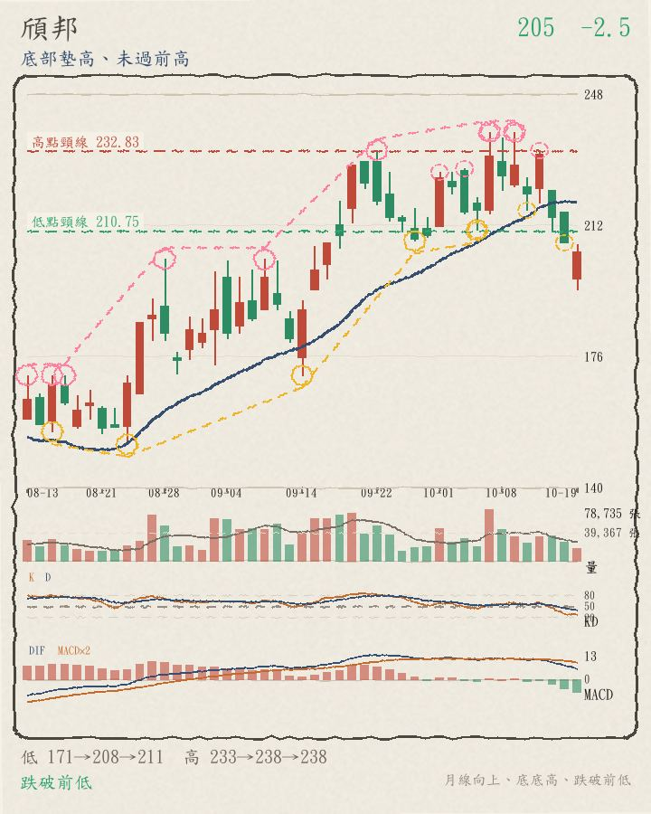
12:31 盤中 205（-1.20%），比加權指數弱 0.19 個百分點、跌破月線 218.875，離高點頸線 232.83 還差 12.0%，底部還在墊高（但高點沒同步創高）。
- 月線位置：現價 205 在月線 218.875 之下（-6.3%）；5 日線 220.8 也在月線之上（短均在上）；月線向上
- 量能：以已過交易時間推估，今天成交量約是 20 日均量的 0.55 倍（量縮），比 20 日均量少很多
- 關鍵價位：已跌破前一個轉折低點；高點頸線 232.83 還在現價上方 12.0%；前一交易日高點 216（低於 5.1%）；今天盤中高點 207（低於 1.0%）；今天盤中低點 194.5（高於 5.4%）
- 轉折結構：低點 171、208、211 墊高（底底高），但高點 233、238、238 沒有同步創高；還沒確認的轉折低點 10-13 216.5、10-16 207.5；還沒確認的轉折高點 10-12 238、10-14 233（圖上虛線小圈）
欣銓 3264 上櫃
255 -3.5（-1.35%）
高點墊高、底部不穩 盤中成交值 37.42 億・全榜第 50 名（上櫃第 11 名）・相對大盤 -0.34
好條件 2/8：月線向上、頭頭高
不好條件 4/8：今日下跌、相對大盤弱、在月線之下、跌破昨日低點
12:31 盤中 255（-1.35%），比加權指數弱 0.34 個百分點、跌破月線 255.45，離高點頸線 290.5 還差 12.2%，高點還在墊高（但底部沒同步墊高）。
- 月線位置：現價 255 在月線 255.45 之下（-0.2%）；5 日線 269.1 也在月線之上（短均在上）；月線向上
- 量能：以已過交易時間推估，今天成交量約是 20 日均量的 0.99 倍（量平），跟 20 日均量差不多
- 關鍵價位：高點頸線 290.5 還沒突破，差 12.2%；前一交易日高點 270.5（低於 5.7%）；今天盤中高點 260.5（低於 2.1%）；今天盤中低點 241.5（高於 5.6%）
- 轉折結構：高點 239.5、251.5、289.5 墊高（頭頭高），但低點 220、238、238 沒有同步墊高；還沒確認的轉折低點 10-08 243、10-16 258；還沒確認的轉折高點 10-12 277、10-14 291.5（圖上虛線小圈）
台塑 1301 上市
77.8 -4.3（-5.24%）
高點墊高、底部不穩 盤中成交值 35.79 億・全榜第 51 名（上市第 40 名）・相對大盤 -4.23
好條件 4/8：站上月線、月線向上、頭頭高、突破頸線
不好條件 4/8：今日下跌、相對大盤弱、貼近今日低點（1% 內）、跌破昨日低點
12:31 盤中 77.8（-5.24%），比加權指數弱 4.23 個百分點、站上月線 71.245，已突破高點頸線 70.13，高點還在墊高（但底部沒同步墊高）。
- 月線位置：現價 77.8 在月線 71.245 之上（+9.2%）；5 日線 82.86 也在月線之上（短均在上）；月線向上
- 量能：以已過交易時間推估，今天成交量約是 20 日均量的 0.87 倍（量平），比 20 日均量少一些
- 關鍵價位：高點頸線 70.13 已站上；前一交易日高點 84.3（低於 7.7%）；今天盤中高點 81（低於 4.0%）；今天盤中低點 77.3（高於 0.6%）
- 轉折結構：高點 57.2、61.8、71.2 墊高（頭頭高），但低點 64.1、61.2、62 沒有同步墊高；還沒確認的轉折低點 10-13 77.3、10-15 80.2；還沒確認的轉折高點 10-12 84、10-15 89.4（圖上虛線小圈）
群聯 8299 上櫃
1845 -45.0（-2.38%）
區間或轉弱 盤中成交值 34.41 億・全榜第 52 名（上櫃第 12 名）・相對大盤 -1.37
好條件 1/8：守住今日高檔（距今日高點 1% 內）
不好條件 6/8：跌破前低、今日下跌、相對大盤弱、在月線之下、跌破昨日低點、月線下彎
12:31 盤中 1845（-2.38%），比加權指數弱 1.37 個百分點、跌破月線 2062.75，離高點頸線 2171.25 還差 15.0%，轉折還沒走出明顯方向。
- 月線位置：現價 1845 在月線 2062.75 之下（-10.6%）；5 日線 1941 也在月線之下（短均在下）；月線向下
- 量能：以已過交易時間推估，今天成交量約是 20 日均量的 0.76 倍（量平），比 20 日均量少很多
- 關鍵價位：已跌破前一個轉折低點；高點頸線 2171.25 還在現價上方 15.0%；前一交易日高點 1950（低於 5.4%）；今天盤中高點 1850（低於 0.3%）；今天盤中低點 1785（高於 3.4%）
- 轉折結構：低點 1970、1900、2080 與高點 2195、2160、2350 都沒有明顯遞增，屬於區間震盪或轉弱；還沒確認的轉折低點 10-13 1905、10-15 1800；還沒確認的轉折高點 10-12 2115、10-16 1950（圖上虛線小圈）
緯創 3231 上市
179 -3.5（-1.92%）
區間或轉弱 盤中成交值 34.1 億・全榜第 53 名（上市第 41 名）・相對大盤 -0.91
好條件 0/8：無
不好條件 5/8：跌破前低、今日下跌、相對大盤弱、在月線之下、月線下彎
12:31 盤中 179（-1.92%），比加權指數弱 0.91 個百分點、跌破月線 185.45，離高點頸線 191.3 還差 6.4%，轉折還沒走出明顯方向。
- 月線位置：現價 179 在月線 185.45 之下（-3.5%）；5 日線 184.4 也在月線之下（短均在下）；月線向下
- 量能：以已過交易時間推估，今天成交量約是 20 日均量的 0.67 倍（量縮），比 20 日均量少很多
- 關鍵價位：已跌破前一個轉折低點；高點頸線 191.3 還在現價上方 6.4%；前一交易日高點 183（低於 2.2%）；今天盤中高點 179（高於 0.0%）；今天盤中低點 175.5（高於 2.0%）
- 轉折結構：低點 179.5、178、182.5 與高點 200.5、190.5、194.5 都沒有明顯遞增，屬於區間震盪或轉弱；還沒確認的轉折低點 10-13 185.5、10-15 173.5；還沒確認的轉折高點 10-06 194.5、10-12 192（圖上虛線小圈）
騰輝電子-KY 6672 上市
564 -27.0（-4.57%）
上升趨勢（底底高＋頭頭高） 盤中成交值 33.83 億・全榜第 54 名（上市第 42 名）・相對大盤 -3.56
好條件 4/8：站上月線、月線向上、底底高、頭頭高
不好條件 2/8：今日下跌、相對大盤弱
12:31 盤中 564（-4.57%），比加權指數弱 3.56 個百分點、站上月線 428.275，離高點頸線 598.67 還差 5.8%，轉折結構仍是底底高＋頭頭高。
- 月線位置：現價 564 在月線 428.275 之上（+31.7%）；5 日線 578 也在月線之上（短均在上）；月線向上
- 量能：以已過交易時間推估，今天成交量約是 20 日均量的 1.15 倍（量增），比 20 日均量大不少；下跌卻量增，量價背離
- 關鍵價位：高點頸線 598.67 還沒突破，差 5.8%；前一交易日高點 599（低於 5.8%）；今天盤中高點 580（低於 2.8%）；今天盤中低點 532（高於 6.0%）
- 轉折結構：低點 255、261.5、285 一路墊高、高點 294.5、317.5、605 也一路墊高，是底底高＋頭頭高；還沒確認的轉折低點 10-13 539、10-16 537；還沒確認的轉折高點 10-14 592、10-16 599（圖上虛線小圈）
致茂 2360 上市
2015 +15.0（+0.75%）
高點墊高、底部不穩 盤中成交值 32.04 億・全榜第 55 名（上市第 43 名）・相對大盤 +1.76
好條件 2/8：頭頭高、相對大盤強
不好條件 3/8：跌破前低、在月線之下、月線下彎
12:31 盤中 2015（+0.75%），比加權指數強 1.76 個百分點、跌破月線 2236.75，離高點頸線 2497.5 還差 19.3%，高點還在墊高（但底部沒同步墊高）。
- 月線位置：現價 2015 在月線 2236.75 之下（-9.9%）；5 日線 2168 也在月線之下（短均在下）；月線向下
- 量能：以已過交易時間推估，今天成交量約是 20 日均量的 0.84 倍（量平），比 20 日均量少很多；上漲但量縮，量價背離
- 關鍵價位：已跌破前一個轉折低點；高點頸線 2497.5 還在現價上方 19.3%；前一交易日高點 2045（低於 1.5%）；今天盤中高點 2045（低於 1.5%）；今天盤中低點 1945（高於 3.6%）
- 轉折結構：高點 2490、2540、2560 墊高（頭頭高），但低點 1875、2070、2025 沒有同步墊高；還沒確認的轉折低點 10-13 2180、10-16 1960；還沒確認的轉折高點 10-07 2560、10-14 2350（圖上虛線小圈）
旺宏 2337 上市
101.5 -5.5（-5.14%）
區間或轉弱 盤中成交值 31.16 億・全榜第 56 名（上市第 44 名）・相對大盤 -4.13
好條件 1/8：守住今日高檔（距今日高點 1% 內）
不好條件 7/8：跌破前低、今日下跌、相對大盤弱、在月線之下、量增下跌（出貨）、跌破昨日低點、月線下彎
12:31 盤中 101.5（-5.14%），比加權指數弱 4.13 個百分點、跌破月線 116.65，離高點頸線 122.9 還差 17.4%，轉折還沒走出明顯方向。
- 月線位置：現價 101.5 在月線 116.65 之下（-13.0%）；5 日線 108.7 也在月線之下（短均在下）；月線向下
- 量能：以已過交易時間推估，今天成交量約是 20 日均量的 1.46 倍（量增），比 20 日均量大不少；下跌卻量增，量價背離
- 關鍵價位：已跌破前一個轉折低點；高點頸線 122.9 還在現價上方 17.4%；前一交易日高點 109（低於 6.9%）；今天盤中高點 102（低於 0.5%）；今天盤中低點 99.2（高於 2.3%）
- 轉折結構：低點 116.5、114、114.5 與高點 130、124.5、123 都沒有明顯遞增，屬於區間震盪或轉弱；還沒確認的轉折低點 10-13 105、10-15 103；還沒確認的轉折高點 10-08 121.5、10-16 109（圖上虛線小圈）
萬潤 6187 上櫃
1395 -15.0（-1.06%）
區間或轉弱 盤中成交值 30.73 億・全榜第 57 名（上櫃第 13 名）・相對大盤 -0.05
好條件 3/8：站上月線、月線向上、守住今日高檔（距今日高點 1% 內）
不好條件 2/8：今日下跌、相對大盤弱
12:31 盤中 1395（-1.06%），比加權指數弱 0.05 個百分點、站上月線 1374，離高點頸線 1436.67 還差 2.9%，轉折還沒走出明顯方向。
- 月線位置：現價 1395 在月線 1374 之上（+1.5%）；5 日線 1523 也在月線之上（短均在上）；月線向上
- 量能：以已過交易時間推估，今天成交量約是 20 日均量的 1.06 倍（量平），比 20 日均量大一些
- 關鍵價位：高點頸線 1436.67 還沒突破，差 2.9%；前一交易日高點 1455（低於 4.1%）；今天盤中高點 1405（低於 0.7%）；今天盤中低點 1320（高於 5.7%）
- 轉折結構：低點 1185、1180、1180 與高點 1435、1270、1680 都沒有明顯遞增，屬於區間震盪或轉弱；還沒確認的轉折低點 10-08 1490、10-16 1385；還沒確認的轉折高點 10-06 1590、10-13 1680（圖上虛線小圈）
凱崴 5498 上櫃
65.7 +5.9（+9.87%）
上升趨勢（底底高＋頭頭高） 盤中成交值 30.46 億・全榜第 58 名（上櫃第 14 名）・相對大盤 +10.88
好條件 7/8：站上月線、月線向上、底底高、頭頭高、突破頸線、相對大盤強、攻擊量（量增＋上漲）
不好條件 0/8：無
12:31 盤中 65.7（+9.87%），比加權指數強 10.88 個百分點、站上月線 52.832，已突破高點頸線 60.55，轉折結構仍是底底高＋頭頭高。
- 月線位置：現價 65.7 在月線 52.832 之上（+24.4%）；5 日線 54.98 也在月線之上（短均在上）；月線向上
- 量能：以已過交易時間推估，今天成交量約是 20 日均量的 31.12 倍（爆量），比 20 日均量大不少；上漲又量增，量價配合
- 關鍵價位：高點頸線 60.55 已站上；前一交易日高點 59.8（高於 9.9%）；今天盤中高點 65.7（高於 0.0%）；今天盤中低點 58.1（高於 13.1%）
- 轉折結構：低點 49.05、49.45、50.8 一路墊高、高點 53.2、53.2、57.8 也一路墊高，是底底高＋頭頭高；還沒確認的轉折低點 10-13 50.8、10-15 51.5；還沒確認的轉折高點 10-14 55.5、10-16 59.8（圖上虛線小圈）
華新科 2492 上市
362 -33.0（-8.35%）
底部墊高、未過前高 盤中成交值 29.43 億・全榜第 59 名（上市第 45 名）・相對大盤 -7.34
好條件 3/8：站上月線、月線向上、底底高
不好條件 4/8：跌破前低、今日下跌、相對大盤弱、跌破昨日低點
12:31 盤中 362（-8.35%），比加權指數弱 7.34 個百分點、站上月線 354.275，離高點頸線 428.75 還差 15.6%，底部還在墊高（但高點沒同步創高）。
- 月線位置：現價 362 在月線 354.275 之上（+2.2%）；5 日線 407.3 也在月線之上（短均在上）；月線向上
- 量能：以已過交易時間推估，今天成交量約是 20 日均量的 0.33 倍（量縮），比 20 日均量少很多
- 關鍵價位：已跌破前一個轉折低點；高點頸線 428.75 還在現價上方 15.6%；前一交易日高點 418（低於 13.4%）；今天盤中高點 372（低於 2.7%）；今天盤中低點 355.5（高於 1.8%）
- 轉折結構：低點 291、298.5、376.5 墊高（底底高），但高點 344、326、431.5 沒有同步創高；還沒確認的轉折低點 10-13 376.5、10-16 385；還沒確認的轉折高點 10-08 431.5、10-14 426（圖上虛線小圈）
華碩 2357 上市
962 -32.0（-3.22%）
區間或轉弱 盤中成交值 29.32 億・全榜第 60 名（上市第 46 名）・相對大盤 -2.21
好條件 1/8：月線向上
不好條件 6/8：跌破前低、今日下跌、相對大盤弱、在月線之下、量增下跌（出貨）、跌破昨日低點
12:31 盤中 962（-3.22%），比加權指數弱 2.21 個百分點、跌破月線 969.5，離高點頸線 1012.5 還差 5.0%，轉折還沒走出明顯方向。
- 月線位置：現價 962 在月線 969.5 之下（-0.8%）；5 日線 980.4 也在月線之上（短均在上）；月線向上
- 量能：以已過交易時間推估，今天成交量約是 20 日均量的 1.82 倍（爆量），比 20 日均量大不少；下跌卻量增，量價背離
- 關鍵價位：已跌破前一個轉折低點；高點頸線 1012.5 還在現價上方 5.0%；前一交易日高點 1005（低於 4.3%）；今天盤中高點 984（低於 2.2%）；今天盤中低點 946（高於 1.7%）
- 轉折結構：低點 942、964、964 與高點 1030、973、1010 都沒有明顯遞增，屬於區間震盪或轉弱；還沒確認的轉折低點 10-13 964、10-15 966；還沒確認的轉折高點 10-14 1005、10-16 1005（圖上虛線小圈）
川湖 2059 上市
9950 -5.0（-0.05%）
區間或轉弱 盤中成交值 28.95 億・全榜第 61 名（上市第 47 名）・相對大盤 +0.96
好條件 2/8：相對大盤強、守住今日高檔（距今日高點 1% 內）
不好條件 4/8：跌破前低、今日下跌、在月線之下、月線下彎
12:31 盤中 9950（-0.05%），比加權指數強 0.96 個百分點、跌破月線 11718.8，離高點頸線 13196.7 還差 24.6%，轉折還沒走出明顯方向。
- 月線位置：現價 9950 在月線 11718.8 之下（-15.1%）；5 日線 10064 也在月線之下（短均在下）；月線向下
- 量能：以已過交易時間推估，今天成交量約是 20 日均量的 0.70 倍（量縮），比 20 日均量少很多
- 關鍵價位：已跌破前一個轉折低點；高點頸線 13196.7 還在現價上方 24.6%；前一交易日高點 10175（低於 2.2%）；今天盤中高點 10040（低於 0.9%）；今天盤中低點 9690（高於 2.7%）
- 轉折結構：低點 13310、11665、11700 與高點 14200、13305、13500 都沒有明顯遞增，屬於區間震盪或轉弱；還沒確認的轉折低點 10-02 11700、10-15 9500；還沒確認的轉折高點 10-06 13500、10-16 10175（圖上虛線小圈）
威剛 3260 上櫃
334.5 -25.5（-7.08%）
區間或轉弱 盤中成交值 28.86 億・全榜第 62 名（上櫃第 15 名）・相對大盤 -6.07
好條件 0/8：無
不好條件 7/8：跌破前低、今日下跌、相對大盤弱、在月線之下、量增下跌（出貨）、跌破昨日低點、月線下彎
12:31 盤中 334.5（-7.08%），比加權指數弱 6.07 個百分點、跌破月線 376.25，離高點頸線 374.5 還差 10.7%，轉折還沒走出明顯方向。
- 月線位置：現價 334.5 在月線 376.25 之下（-11.1%）；5 日線 361.6 也在月線之下（短均在下）；月線向下
- 量能：以已過交易時間推估，今天成交量約是 20 日均量的 2.66 倍（爆量），比 20 日均量大不少；下跌卻量增，量價背離
- 關鍵價位：已跌破前一個轉折低點；高點頸線 374.5 還在現價上方 10.7%；前一交易日高點 367（低於 8.9%）；今天盤中高點 348.5（低於 4.0%）；今天盤中低點 327（高於 2.3%）
- 轉折結構：低點 390.5、385、373.5 與高點 428、405.5、385.5 都沒有明顯遞增，屬於區間震盪或轉弱；還沒確認的轉折低點 10-15 350、10-16 350；還沒確認的轉折高點 10-14 367.5、10-16 367（圖上虛線小圈）
世芯-KY 3661 上市
3690 +5.0（+0.14%）
區間或轉弱 盤中成交值 28.78 億・全榜第 63 名（上市第 48 名）・相對大盤 +1.15
好條件 3/8：月線向上、相對大盤強、守住今日高檔（距今日高點 1% 內）
不好條件 1/8：在月線之下

12:31 盤中 3690（+0.14%），比加權指數強 1.15 個百分點、跌破月線 3826.75，離高點頸線 4456.67 還差 17.2%，轉折還沒走出明顯方向。
- 月線位置：現價 3690 在月線 3826.75 之下（-3.6%）；5 日線 3956 也在月線之上（短均在上）；月線向上
- 量能：以已過交易時間推估，今天成交量約是 20 日均量的 0.40 倍（量縮），比 20 日均量少很多；上漲但量縮，量價背離
- 關鍵價位：高點頸線 4456.67 還沒突破，差 17.2%；前一交易日高點 3755（低於 1.7%）；今天盤中高點 3720（低於 0.8%）；今天盤中低點 3555（高於 3.8%）
- 轉折結構：低點 2630、3585、3260 與高點 4350、3950、4490 都沒有明顯遞增，屬於區間震盪或轉弱；還沒確認的轉折低點 10-06 3850、10-16 3600；還沒確認的轉折高點 10-12 4490（圖上虛線小圈）
德宏 5475 上櫃
212 +13.5（+6.80%）
區間或轉弱 盤中成交值 28.6 億・全榜第 64 名（上櫃第 16 名）・相對大盤 +7.81
好條件 4/8：站上月線、月線向上、相對大盤強、攻擊量（量增＋上漲）
不好條件 0/8：無
12:31 盤中 212（+6.80%），比加權指數強 7.81 個百分點、站上月線 187.225，離高點頸線 214.25 還差 1.1%，轉折還沒走出明顯方向。
- 月線位置：現價 212 在月線 187.225 之上（+13.2%）；5 日線 202.9 也在月線之上（短均在上）；月線向上
- 量能：以已過交易時間推估，今天成交量約是 20 日均量的 3.47 倍（爆量），比 20 日均量大不少；上漲又量增，量價配合
- 關鍵價位：高點頸線 214.25 還沒突破，差 1.1%；前一交易日高點 201.5（高於 5.2%）；今天盤中高點 215（低於 1.4%）；今天盤中低點 184（高於 15.2%）
- 轉折結構：低點 156、176、168 與高點 203.5、195、215 都沒有明顯遞增，屬於區間震盪或轉弱；還沒確認的轉折低點 10-13 194、10-15 189；還沒確認的轉折高點 10-12 215、10-14 213.5（圖上虛線小圈）
愛普* 6531 上市
827 -55.0（-6.24%）
區間或轉弱 盤中成交值 28.1 億・全榜第 65 名（上市第 49 名）・相對大盤 -5.23
好條件 0/8：無
不好條件 6/8：跌破前低、今日下跌、相對大盤弱、在月線之下、跌破昨日低點、月線下彎
12:31 盤中 827（-6.24%），比加權指數弱 5.23 個百分點、跌破月線 953.85，離高點頸線 990 還差 16.5%，轉折還沒走出明顯方向。
- 月線位置：現價 827 在月線 953.85 之下（-13.3%）；5 日線 901.8 也在月線之下（短均在下）；月線向下
- 量能：以已過交易時間推估，今天成交量約是 20 日均量的 1.12 倍（量增），比 20 日均量大一些；下跌卻量增，量價背離
- 關鍵價位：已跌破前一個轉折低點；高點頸線 990 還在現價上方 16.5%；前一交易日高點 887（低於 6.8%）；今天盤中高點 844（低於 2.0%）；今天盤中低點 799（高於 3.5%）
- 轉折結構：低點 901、887、914 與高點 1065、1005、1090 都沒有明顯遞增，屬於區間震盪或轉弱；還沒確認的轉折低點 10-13 891、10-16 829；還沒確認的轉折高點 10-05 1090、10-14 970（圖上虛線小圈）
聯茂 6213 上市
773 -1.0（-0.13%）
高點墊高、底部不穩 盤中成交值 27.67 億・全榜第 66 名（上市第 50 名）・相對大盤 +0.88
好條件 4/8：站上月線、月線向上、頭頭高、相對大盤強
不好條件 1/8：今日下跌
12:31 盤中 773（-0.13%），比加權指數強 0.88 個百分點、站上月線 675.75，離高點頸線 821.5 還差 5.9%，高點還在墊高（但底部沒同步墊高）。
- 月線位置：現價 773 在月線 675.75 之上（+14.4%）；5 日線 807.2 也在月線之上（短均在上）；月線向上
- 量能：以已過交易時間推估，今天成交量約是 20 日均量的 0.27 倍（量縮），比 20 日均量少很多
- 關鍵價位：高點頸線 821.5 還沒突破，差 5.9%；前一交易日高點 809（低於 4.4%）；今天盤中高點 785（低於 1.5%）；今天盤中低點 721（高於 7.2%）
- 轉折結構：高點 387.5、599、555 墊高（頭頭高），但低點 493.5、482、731 沒有同步墊高；還沒確認的轉折低點 10-13 731、10-16 746；還沒確認的轉折高點 10-12 825、10-14 858（圖上虛線小圈）
雙鴻 3324 上櫃
1375 -50.0（-3.51%）
高點墊高、底部不穩 盤中成交值 27.24 億・全榜第 67 名（上櫃第 17 名）・相對大盤 -2.50
好條件 2/8：月線向上、頭頭高
不好條件 5/8：跌破前低、今日下跌、相對大盤弱、在月線之下、跌破昨日低點
12:31 盤中 1375（-3.51%），比加權指數弱 2.50 個百分點、跌破月線 1515.25，離高點頸線 1572.5 還差 12.6%，高點還在墊高（但底部沒同步墊高）。
- 月線位置：現價 1375 在月線 1515.25 之下（-9.3%）；5 日線 1468 也在月線之下（短均在下）；月線向上
- 量能：以已過交易時間推估，今天成交量約是 20 日均量的 0.62 倍（量縮），比 20 日均量少很多
- 關鍵價位：已跌破前一個轉折低點；高點頸線 1572.5 還在現價上方 12.6%；前一交易日高點 1460（低於 5.8%）；今天盤中高點 1405（低於 2.1%）；今天盤中低點 1320（高於 4.2%）
- 轉折結構：高點 1080、1505、1750 墊高（頭頭高），但低點 1240、1480、1395 沒有同步墊高；還沒確認的轉折低點 10-08 1395、10-16 1395；還沒確認的轉折高點 10-05 1575、10-08 1570（圖上虛線小圈）
精測 6510 上櫃
3215 +95.0（+3.04%）
區間或轉弱 盤中成交值 24.14 億・全榜第 68 名（上櫃第 18 名）・相對大盤 +4.05
好條件 2/8：突破頸線、相對大盤強
不好條件 2/8：在月線之下、月線下彎
12:31 盤中 3215（+3.04%），比加權指數強 4.05 個百分點、跌破月線 3232，已突破高點頸線 3170，轉折還沒走出明顯方向。
- 月線位置：現價 3215 在月線 3232 之下（-0.5%）；5 日線 3189 也在月線之下（短均在下）；月線向下
- 量能：以已過交易時間推估，今天成交量約是 20 日均量的 1.09 倍（量平），比 20 日均量大一些
- 關鍵價位：高點頸線 3170 已站上；前一交易日高點 3160（高於 1.7%）；今天盤中高點 3250（低於 1.1%）；今天盤中低點 2995（高於 7.3%）
- 轉折結構：低點 3165、2960、3000 與高點 3935、3775、3580 都沒有明顯遞增，屬於區間震盪或轉弱；還沒確認的轉折低點 10-08 3000、10-16 2825；還沒確認的轉折高點 10-14 3385、10-16 3160（圖上虛線小圈）
力旺 3529 上櫃
2695 -55.0（-2.00%）
上升趨勢（底底高＋頭頭高） 盤中成交值 23.93 億・全榜第 69 名（上櫃第 19 名）・相對大盤 -0.99
好條件 3/8：月線向上、底底高、頭頭高
不好條件 3/8：今日下跌、相對大盤弱、在月線之下
12:31 盤中 2695（-2.00%），比加權指數弱 0.99 個百分點、跌破月線 2994.75，離高點頸線 2803.75 還差 3.9%，轉折結構仍是底底高＋頭頭高。
- 月線位置：現價 2695 在月線 2994.75 之下（-10.0%）；5 日線 2788 也在月線之下（短均在下）；月線向上
- 量能：以已過交易時間推估，今天成交量約是 20 日均量的 0.92 倍（量平），比 20 日均量少一些
- 關鍵價位：高點頸線 2803.75 還沒突破，差 3.9%；前一交易日高點 2795（低於 3.6%）；今天盤中高點 2750（低於 2.0%）；今天盤中低點 2625（高於 2.7%）
- 轉折結構：低點 1995、2090、2530 一路墊高、高點 2720、2875、3635 也一路墊高，是底底高＋頭頭高；還沒確認的轉折低點 10-13 2690、10-15 2655；還沒確認的轉折高點 10-14 2955、10-16 2795（圖上虛線小圈）
亞電 4939 上櫃
80.4 -2.9（-3.48%）
高點墊高、底部不穩 盤中成交值 23.08 億・全榜第 70 名（上櫃第 20 名）・相對大盤 -2.47
好條件 2/8：站上月線、頭頭高
不好條件 4/8：今日下跌、相對大盤弱、量增下跌（出貨）、月線下彎
12:31 盤中 80.4（-3.48%），比加權指數弱 2.47 個百分點、站上月線 77.605，離高點頸線 82.67 還差 2.7%，高點還在墊高（但底部沒同步墊高）。
- 月線位置：現價 80.4 在月線 77.605 之上（+3.6%）；5 日線 76.8 也在月線之下（短均在下）；月線向下
- 量能：以已過交易時間推估，今天成交量約是 20 日均量的 4.39 倍（爆量），比 20 日均量大不少；下跌卻量增，量價背離
- 關鍵價位：高點頸線 82.67 還沒突破，差 2.7%；前一交易日高點 83.3（低於 3.5%）；今天盤中高點 85（低於 5.4%）；今天盤中低點 79（高於 1.8%）
- 轉折結構：高點 94.5、84、80.7 墊高（頭頭高），但低點 75.3、71.3、70 沒有同步墊高；還沒確認的轉折低點 10-13 70、10-15 75.4；還沒確認的轉折高點 10-08 80.7、10-16 83.3（圖上虛線小圈）